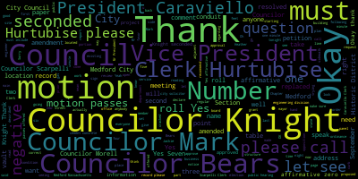
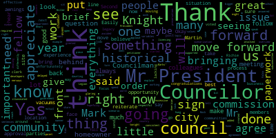
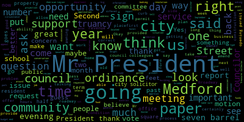
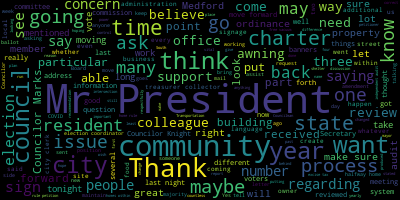
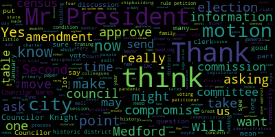

[Falco]: The 27th regular meeting of the Medford City Council will now come to order. Clerk Hurtubise, please call the roll. Councilor Bears. Present.
[SPEAKER_29]: Vice President Caraviello. Present. Councilor Knight.
[Hurtubise]: Present.
[SPEAKER_29]: Councilor Marks. Councilor Morell. Present. Councilor Scarpelli. Present. President Falco.
[Falco]: Present. All seven members are present. At this time, I'd ask everyone to please rise to salute the flag. I pledge allegiance to the flag of the United States of America, and to the Republic for which it stands, one nation, under God, indivisible, with liberty and justice for all.
[Caraviello]: President.
[Falco]: Vice President Carriello.
[Caraviello]: Read your speech first.
[Falco]: Oh, yes. Pursuant to Governor Baker's March 12, 2020 order suspending certain provisions of the Open Meeting Law, General Law Chapter 38, Section 18, and the Governor's March 15, 2020 order imposing strict limitation on the number of people that may gather in one place, this meeting of the Medford City Council will be conducted via remote participation to the greatest extent possible. specific information, and the general guidelines for remote participation by members of the public and or parties with a right and or requirement to attend this meeting can be found on the City of Medford website at www.medfordma.org. For this meeting, members of the public who wish to listen or watch the meeting may do so by accessing the meeting link contained herein. No in-person attendance of members of the public will be permitted, but every effort will be made to ensure that the public can adequately access the proceedings in real time via technological means. In the event that we are unable to do so, despite best efforts, we will post on the City of Medford or Medford Community Media website an audio or video recording transcript or other comprehensive record of proceedings as soon as possible after the meeting. To participate remotely outside of Zoom, please email the clerk, Adam Herdebes at A-H-U-R-T-U-B-I-S-E at MedfordMA.gov. That's Medford-MA.gov. At this point, I'll recognize Vice President Councilor Caviello.
[Caraviello]: Mr. President, motions for suspension to take some papers out of order. 20561, 20562, 20564, 20565, 2047, and 20544. On the motion of Councilor, on the motion of Vice President Caviello to suspend the rule, seconded by Councilor and I, Clerk Hurtubise, please call the roll.
[SPEAKER_32]: Yes.
[Falco]: Yes, 7 in the affirmative, 0 in the negative. The rules are suspended. 20-561, petition for a common vigil is licensed by Robert Miller, 49 Pool Street, Medford, Massachusetts, 02155. For American Legion Post 45, 321 Winthrop Street, Medford, Massachusetts, 02155. On file is the business certificate number 163, building department, fire department, police traffic impact, health department, letter of compliance, state tax ID, workman's compensation, petition, and treasurer. At this point, I recognize the chairperson on licensing, Councilor Scarpelli. Councilor Scarpelli?
[Scarpelli]: Thank you, Mr. President. I see that Mr. Miller has all of their paperwork in order. I will move forward after maybe a brief, just a summarization from our petitioner and any questions from our counselors.
[Falco]: Okay, do we have Robert Miller on the call?
[SPEAKER_29]: I believe we have Richard Martin on the call, who works with, Richard Martin is the commander of the post. And I'm trying to unmute him now.
[Falco]: I'm trying to unmute him as well, so I'll let you do that. Okay, Commander Martin, name and address for the record, please.
[Martin]: Pardon?
[Falco]: Name and address for the record, please. We just need your name and address.
[Martin]: My name is Richard Martin. I live at 28 Royal Avenue in Medford, Massachusetts.
[Scarpelli]: Thank you. So if you could just give us a brief overview, Mr. Martin, so we can, and we see all your paperwork is in order, but do you want to just give a little few sentences of what this is to explain to the rest of the council what we're doing?
[Martin]: Yes. As you know, Post 45 is has been there since 1919, and it's a community-based veterans organization. And what we want to do now, in keeping with the times, is be able to serve a minimal amount of food to our members. And we've worked very hard to bring the place up to compliance. It has passed and we feel that this will help the morale of some of our veterans. Most of them are the average age now is about 70 years old. They don't get out very much and we do bring them in. And we want to make it comfortable for them and so they can enjoy themselves and have a hot dog or something of that nature.
[SPEAKER_10]: That's great, so thank you, Mr. Martin.
[Scarpelli]: Again, I've put in the American Legion post. We appreciate everything you've done for our country and all the members, and I see that you've done everything that's required through our licensing department, so I move forward for approval. Thank you, Mr. President. Second, Mr. President.
[Falco]: Thank you, Councilor Scarpelli. In the motion of Councilor Scarpelli, seconded by Vice President Caviello.
[Knight]: Counselor Knight. Mr. President, thank you very much. This is a very important paper to the membership of American Legion Post 45. And in full disclosure, I've been a Sal in the past, a son of the American Legion member there. And what this paper does is it allows them to operate underneath the governor's guidelines. The post has been shut down now since about St. Patrick's Day. And they haven't had the ability to generate any income whatsoever. And that coupled with the fact that this veteran's organization does provide great support services for young and old veterans here in the community of Medford and beyond. That coupled with the fact that the American Legion Post 45 and its membership are always the first ones to step up when the city of Medford needs something, Mr. President. If you look to election day on September 1st. When the Lawrence Memorial Hospital was unable to host us for our election proceedings, the first people to step up to the plate were Richard Mott and Bobby Miller in American Legion Post 45. And when we celebrate our Memorial Day ceremonies, Mr. President, and we all go down to Oak Grove Cemetery and we sit there and we listen to the beautiful presentations put on by our veterans organizations and as we sit there we see those flags all across the cemetery. American Legion Post 45 is the group that coordinates. The placing of those flags on our veterans' grave markers. So it's very important, Mr. President, that we recognize the work and the partnership that the American Legion has provided the citizens and the residents in the city of Medford. And I think it's very important for us to adopt and embrace this opportunity for them to get a common victuals license so that they have the opportunity to reopen and generate some revenues. And also allow the membership, the opportunity to come back in and to continue their mutual support relationship that they have. When we look at the agenda later on this evening, we have a paper talking about substance abuse and addiction recovery services and the ability to have meetings. And veterans organizations, although they don't necessarily hold meetings per se, are a great spot for veterans to congregate, to get together, and to talk about their shared mutual experiences and how to go through some of the struggles that they're having. So with that being said, Mr. President, this is a paper that I support wholeheartedly, and I'd ask my council colleagues to also join me in supporting it.
[Falco]: Thank you, Councilor Knight. Councilor Marks.
[Marks]: Thank you, Mr. President. I, too, want to reiterate my support for Post 45. They've been longstanding members of this community, very active and involved in this community, and good neighbors for many, many years. And I stand here tonight, Mr. President, to support them as they've supported members of this community for the last several decades, Mr. President. Thank you.
[Falco]: Thank you, Counselor Marks. Anybody else? Okay, so on the motion of Councilor Scarpelli, Chairperson of Licensing, seconded by Vice President Carabiello. Clerk Bernabease, please call the roll.
[SPEAKER_32]: Councilor Bears? Yes.
[SPEAKER_29]: Vice President Carabiello? Yes. Councilor Night?
[SPEAKER_26]: Yes.
[SPEAKER_29]: Councilor Marks?
[SPEAKER_26]: Yes.
[SPEAKER_29]: Councilor Morell? Yes. Councilor Scarpelli? Yes. President Falco?
[Falco]: Yes, seven in the affirmative, zero in the negative, the motion passes. Thank you, Commander Martin. Okay, we have, let's see. 20-562, that was the next one, right? Okay. 20-562, petition to reverse sign denial by Heather Dudko for XSS Hotel at 85 Station Landing, Medford, Massachusetts. OCD application 2-A exceeds allowable number of signs. Do we have Heather Dudko with us?
[SPEAKER_28]: I'm looking, Mr. President. I believe we do, but I'm looking.
[Falco]: I see her. She's right here. Heather, I'm trying to unmute you. There we go, Heather. If we could just have your name and address for the record. Heather, we just need your name and address for the record, please. You're on. Actually, no, we can't hear you. One minute.
[SPEAKER_28]: Mr. President, I can hear Heather. So it might be the same technical issue we had a minute ago.
[Falco]: OK. Heather, can you try again? Okay, I apologize, we're having some technical difficulties, so we'll just need a minute.
[SPEAKER_29]: Yes, Mr. President. Yes.
[Falco]: Let's just. No, she's not muted.
[SPEAKER_29]: Mr. President?
[Falco]: Yes.
[SPEAKER_29]: I can hear Heather, but apparently you can't.
[Falco]: You cannot. Let me just see. Jackie Peeks, can you, can you? Hi. Sorry, can you repeat the question? I'm having feedback there. No, there was no question. We just, we just wanted to know if we could hear you. So we're just testing. Sorry. Thank you. Thanks.
[SPEAKER_39]: Okay, why don't we try that?
[Falco]: Heather, if you wouldn't mind, and I apologize for the inconvenience, could you just try hanging up and coming back into the call? Okay, thank you.
[SPEAKER_37]: Motion to table, Mr. President.
[Falco]: Can the motion of councilor marks the table seconded by? Second. Vice President Caviello, Clerk Urtubis, please call the roll.
[SPEAKER_29]: Councilor Bears? Yes. Vice President Caviello? Yes. Councilor Knight? Yes. Councilor Marks? Yes. Councilor Morell?
[Falco]: Yes.
[SPEAKER_29]: Councilor Scarpelli? Yes. President Falco?
[Falco]: Yes. Sending the affirmative, sending the negative, the motion is tabled. Okay, we have, so Heather's up there for two. Okay, so we have Neil Parris. Is Neil Parris with us, Clerk Urtubis? Okay, Mr. President. Yes. Okay. 20-564, petition to reverse signed and ayed by Neil Paris for RIVS Juice Bar. 56, station landing, Bedford, Massachusetts. OCD application three exceeds maximum projection. Okay, so Neil Paris.
[Hurtubise]: Clark, do you see him?
[SPEAKER_29]: He's on and he's unmuted, Mr. President. Okay.
[Powers]: Can you hear me?
[Falco]: Yes. Name and address for the record, please.
[Powers]: Neal Powers, Two Foley Farm Road, Wilmington, Massachusetts. Okay. Thank you.
[Falco]: And let's see, your sign was denied, if I'm correct?
[Powers]: Yes, I believe it's two inches past and my designer had done that pretty much to stay with the other signs that were in station landing. I guess they all ended up petitioning for the same type of variance. And so it's kind of keeping with the same look. We had applied for 32 inches depth compared to 30 inches.
[Falco]: Okay, thank you. Any questions from the council?
[Caraviello]: Mr. President. Vice President Caviello. Thank you, Mr. President. It looks like there are only a few inches over the allowed sided, so I don't see a problem with that. So, I motion for approval.
[Falco]: Okay, the motion of Vice President Caraviello, seconded by- Second. Council Bears. Councilor Knight.
[Knight]: Mr. President, at the end of our packet, there's a letter by Mr. Paris, and I think it's a very good explanation of what's going on. Dear members of the city council, regarding our sign request for Liv's Juice and a Kai bar located at 56 Stations Landing, my understanding is that we're allowed two feet of projection. Since our 24 inch sign is circular, the total square foot is just 3.16 square feet, as opposed to the total four square foot sign that's allowed by the ordinance. The mounting of the sign is flush to the building and would look very funny. And as a result, we're asking for four additional inches of projection for the standoffs to make it fit within the neighborhood and uphold the great look there. Mr. President, I personally find a circular sign more aesthetically pleasing than a big square or rectangular sign sticking off the side of a building. I think Mr. Paris has given us a great explanation, and although it doesn't present a significant hardship, it certainly does present some curb appeal issues that this council has discussed in the past, and I support this paper wholeheartedly.
[SPEAKER_07]: Thank you, Councilor Knight. Councilor Scarpelli.
[Scarpelli]: If you can, is this line, I'm not seeing if it's illuminated.
[Falco]: Mr. Parris?
[Powers]: It is internally lit, yes, that's correct. Thank you.
[Falco]: Thank you, Mr. Parris. Any other questions from the council? Okay, on the motion of Vice President Caviello. Seconded by, Clerk, would you give him a second?
[Bears]: It was Councilor Morell.
[Hurtubise]: It was Councilor Morell? Okay, I'm sorry.
[Bears]: I thought Councilor Bears had the second, but we said it at the same time.
[Falco]: Okay, so Councilor Morell. Let's see, we have Councilor Marks. Councilor Morell.
[Marks]: Mr. President, does the owner of the property have plans to turn the sign off after hours? Mr. Parris, can you comment on that?
[Costas]: I'm sorry, did you say the owner of the building? I believe ours is separate.
[Powers]: But we can program however need be. So whether it's for during business hours or from dusk till dawn, whatever we need to, we can program it.
[Marks]: I would state, Mr. President, to be consistent, and I've voted like this in the past, that the sign be turned off when the business is not in operation. Okay, are you writing that as an amendment to the- I would like to hear what my other council colleagues would like to say on that, and I would have that as an amendment, Mr. President.
[Falco]: Okay, so that is an amendment by Councilor Marks? And we'll get some, would any of the councils like to comment on that? Councilor Bears?
[Bears]: Thank you, Mr. President. I'm fine with that, as long as it's within the control of the business, as long as the property owner isn't the one who controls the light switch. We're just having a little bit of feedback. I think there were too many mics turned on, so that's directed to you, Mr. President. I think we're fine now. It looks like they're off. Yeah, we're fine. Great, thank you.
[Hurtubise]: Thank you, Councilor Bears.
[Knight]: I know our ordinance speaks to the signs not being illuminated after 10 p.m. Anyhow, what are the hours of the gentleman's operations?
[Powers]: We actually have two sets of hours. Our fall hours just went into effect where we're actually closing at 4 p.m. But our summer hours, we close at 6 p.m. But I can tell you that just walking up and down Station Landing at night, I believe that a lot of the businesses
[Marks]: So I would ask with consistency, Mr. President, that the light be turned off. If the audience is 10, that's fine.
[Knight]: But whatever the practices at stations landing, I mean, I'm not opposed to the measure at all, counselor.
[Marks]: I don't want to come across- I just want to be consistent, because I know when station landing came aboard, we spent a lot of time working on the signage to make sure that it was aesthetically pleasing, because there are a number of residents that live in station landing.
[Falco]: Correct.
[Marks]: And we have to be mindful of that as well.
[Falco]: So is the amendment, I just want to be clear, so is the amendment that the sign gets turned off when the rest of the signs at the stations get turned off?
[Marks]: I would say that it conforms with the existing sign ordinance, which I believe Councilman Knight is correct, that 10 a.m. the sign be turned off. 10 p.m. 10 p.m. 10 p.m.
[Falco]: Thank you. Clerk, do you have the amendment?
[SPEAKER_29]: Working on it, Mr. President. So the amendment is to is to shut off the lights in accordance with the existing ordinance and shut the lights off at 10 p.m.
[Hurtubise]: Correct.
[Falco]: Thank you, Clerk Urtubis. Thank you, Councilor Marks. Councilor Knight, did you have a comment? You're all set?
[SPEAKER_40]: I thank Councilor Marks for raising the issue.
[Falco]: Okay, thank you. Councilor Scarpelli.
[Scarpelli]: Thank you, Mr. President. Again, my question was answered. I think that being consistent with the other signs, I think I would agree with my fellow councils. Thank you.
[Falco]: Okay, thank you very much. Okay, with that being said, on the motion of Vice President Caviello, seconded by Councilor Morell, as amended by Councilor Marks. Clerk Urdovich, please call the roll.
[SPEAKER_29]: Councilor Bears? Yes. Vice President Caraballo? Yes. Councilor Knight? Yes. Councilor Marks?
[SPEAKER_26]: Yes.
[SPEAKER_29]: Councilor Morell? Yes. Councilor Scarpelli? Yes. President Falco?
[Falco]: Yes. Setting the affirmative, zeroing the negative, the motion passes. Let's see, let's check with Heather Dudcoe, see if we can.
[SPEAKER_29]: Mr. President? Yes. Mister had a call at 730 she would be back on the zoom meeting at 745.
[Falco]: All right, no worries. Perfect. So we'll go to 20-565. Petition to reverse sign denial by Best Price Signs in printing for Prestige Car Wash. 277 Middlesex Ave, Medford, Massachusetts, OCD. Application six, exceeds allowable area of secondary signage. Do we have anyone on the call from Best Practice Signs? We do, right here. Gilmour, if we could please have your name and address for the record.
[Silva]: Yeah, my name is Guilmar Silva. I'm at 1034 North Montelli Street in Brock, Ramirez. I'm from the sign company.
[Falco]: From the sign company, okay. Can you tell us a little bit about your sign?
[Silva]: Yes, technically, he has the windows, he want to put a yoni on the top of the windows. just to make the place look beautiful, look a little bit better. It's just you don't have any lights. I'm going to only put the logo of the company, the name Free Vacuum. That's all. Each only. No lights. It's just canvas and aluminum. That's all. That's going to be between each vacuum. I don't know if you guys have the photo I do have over here with me.
[Falco]: Yes, we do have a photo in a package here. Yes, we have a question from, we have Councilor Knight.
[Knight]: Yes, Mr. President, again, at the end of this application, there's also a letter dated March 3rd, 2020 from Mr. DeSilva at the time. I guess March 3rd is when he requested his appeal. And it reads, the purpose of these proposed awnings is to provide protection from the environment, enhance the appeal of the car wash, and instruct customers of free vacuum services in an attractive way. Despite the weather conditions, customers will be comfortable vacuuming their vehicles under the shade and shelter of the awning. And the awnings are not only to benefit the customer's comfort, but also create a more attractive facade. Finally, the awnings instruct the customers where the free vacuums are located and create a clear space to park. So Mr. President, it seems like they're seeking 13 awnings, one over each vacuum that look like to be canvas awnings that aren't internally illuminated. But I do believe that they would have certain public safety benefit instructing where the free vacuums are in a location like that. I believe this is the old Randy's Car Wash on Middlesex Ave, if I'm not mistaken. They've always done a pretty good job over there at Randy's, and I don't think that the new operator would be any less successful. And I can certainly support a reversal on the sign denial, but is 13 really the number that we want to approve, I guess is the question.
[Falco]: If you have a comment, we'll hear from some of the councilors. Councilor Knight, thank you. Let's see, we have Councilor Scarpelli, then Councilor Marks. Councilor Scarpelli.
[Scarpelli]: Thank you. Thank you, President Falcone. I know my concern also falls with the number of signs. To have one sign that says free vacuums, I think we can all see, we all know the location, we all see the vacuums. But to have 13 signs, I'm just a little nervous of what would be added after that on those awnings, or what's hung on those awnings and the like. So I'd like to hear what my fellow councilors have to say, but I just think this might be a little excessive. Thank you, Mr. President.
[Falco]: Thank you, Councilor Scarpelli. We have Councilor Marks, and then we have Councilor Bears, and then Councilor Carriello. Councilor Marks.
[Marks]: Thank you, Mr. President, and I happen to frequent this car wash where I live right up the street. And let me tell you, there's no mistaking that there's free vacuum at that particular car wash. There is banners on the fence, there are signs everywhere saying free car wash. You can't help but drive by, I mean a free vacuum, and notice that there's free vacuuming there. I would also state that these particular awnings, according to the letter we received that Councilor Night just read, state that the awnings come off the building two feet. So to state that this would be comfortable vacuuming their vehicles under the shade and shelter of the awning, I don't know how you create shade and shelter of a two foot awning coming off the side of the building. Because the vacuum is in front of the car, which is a pretty big, piece of equipment, there's no way that provides shelter for anyone that's vacuuming, Mr. President. I think the awnings may be a nice addition to the building without signage. So if the gentleman wanted to put 12 awnings and maybe one or two free vacuum, or maybe even three depending on the wish of the council, I would be amendable to that. Because I think the building could use, it's just a squared off building. Aesthetically speaking, it's not that pleasing. Maybe these awnings will make it look more pleasing, but to have it on each awning, Mr. President, is overkill. And it doesn't serve the purpose of shade or shelter. And so I would put in the form of a motion, Mr. President, that out of the request for 13 canvas awnings, that we allow 13 awnings, but only three with signage that states free vacuum.
[SPEAKER_40]: Second. I would second that motion, Mr. President. For it's often in the form of a I guess it would be a restriction correct counsel, right?
[Falco]: The second bike was that counselor night Excuse me So one minute please so we have a motion by counselor Mark seconded by a council night to allow the 13 awnings But only three with signage am I correct correct. Okay quick her to be you had that Yes
[Silva]: So move Mr. President.
[SPEAKER_37]: Mr. President? Yes, Councilor Marks.
[Marks]: Also, if I could, and I realize the banners are probably up temporarily because it doesn't really, other than the banners, there's nothing else that says free vacuum. I would hope as soon as the awnings go up that those temporary banners come off that are on the fence and around the property, Mr. President.
[Falco]: Thank you, Councilor Marks. So we have a number of other Councilors that want to speak on this. We have, let's see, I have up next Councilor Beers. Councilor Beers.
[Bears]: Thank you, Mr. President. Councilor Marks and the petitioner answered my question, so I'm all set. Thank you.
[Falco]: Okay. Thank you, Councilor Beers. Councilor Morell.
[Morell]: Thank you, Mr. President. Similarly, I thank Councilor Marks for bringing forward that language because I wholeheartedly agree and support it. So thank you.
[Falco]: Thank you, Council Member.
[Caraviello]: Vice President Carviello. Thank you, Mr. President. Same thing. I'll support the signs and to make sure that those banners come down after the awnings are up. Because, and again, I think three is more than enough to have free vacuums on it. So I support Council Member's motion also.
[Falco]: Thank you, Vice President Carviello. Okay.
[Caraviello]: Move the question.
[Falco]: On the motion of. Mr. President.
[SPEAKER_29]: Can I interrupt for a second? I'm unclear, I got Councilor Marks' original motion to approve the 13 audits, but only allow three with the signage. Does the motion also include that the temporary planners come down when the audits go up, or is that just a request?
[SPEAKER_37]: Mr. President, if I could.
[Falco]: Yes, let's see. Councilor Marks, you're on.
[Marks]: This may be a question for the building commissioner in his office, but I believe any banners in the city, Mr. President, have to be permitted and approved for businesses. And I believe it's on a temporary basis. I'm not sure if these banners are approved or if they, I don't know. But I would ask as part of this paper that they be taken down as soon as the awnings go up.
[Hurtubise]: It's more of a request.
[Marks]: Right, I'm not sure if he has current approval. Maybe the owner of the property can state whether or not he got approval for the bayonets.
[Silva]: Yes, please. I'm the one who all the signs for him. And I'm responsible for all the signs, all the bayonets, for all the prestige collage. I do all the advertise for him. And I'm going to make sure all the bayonets come out soon and install the bayonets. I make the installation and take all the banners out. That's good, that's good Mr. President. I'm gonna take all the banners out. As soon as I put up, put up the orders.
[Falco]: Okay, thank you Mr. Silva. Councilor Marks, you're all set?
[Marks]: Yeah, so we can leave that language in. He's committing to the language anyway, so we can leave that language in. The banners come down as soon as the signage goes up.
[Falco]: Okay. Got it. Thank you Councilor Marks. Okay, on the motion of Councilor Mark, seconded by Councilor Knight. Clerk Urtubis, please call the roll.
[SPEAKER_29]: Councilor Bears. Yes. Vice President Carabiello. Yes. Thank you. Councilor Knight.
[SPEAKER_26]: Yes.
[SPEAKER_29]: Councilor Marks.
[SPEAKER_26]: Yes.
[SPEAKER_29]: Councilor Morell. Yes. Councilor Scarpelli. Yes. President Hsiaoko.
[Falco]: Yes. Seven in the affirmative, zero in the negative, the motion passes. So let's see, let's see if we can.
[Bears]: Motion to take 2562 off the table.
[Falco]: Heather? Yes, I'm here. All right, perfect. OK, just give us one minute. Oh, good, you can hear me. Good. Yes, we just need one minute. So on the motion of councilor Bears to take 20-562 from the table. Seconded by council. All right, clerk, please call the roll.
[SPEAKER_29]: Councilor Bears? Yes. Vice President Caraviello?
[SPEAKER_26]: Yes.
[SPEAKER_29]: Councilor Night? Yes. Councilor Marks? Yes. Councilor Morell? Yes. I'm sorry, Councilor Scarpelli? Yes. President Falco?
[Falco]: Yes. Seven in the affirmative, zero in the negative. The paper has been taken from the table. 20-562, petition to reverse sign denial by Heather Dudco for XSS Hotels, Fairfield Marriott, 85 Station Landing, Medford, Massachusetts. OCD application 2A exceeds allowable number of signs. Heather, if you could please have your name and address for the record.
[Dutko]: Good evening. My name is Heather Dutko, 27 Old Meeting House Road in Auburn, Mass.
[Falco]: Thank you for joining us. If you could just tell us a little bit about your sign.
[Dutko]: Sure. This is a hotel being built and we requested to have signage on all four elevations. And two of the elevations were approved. The east side, the east elevation and the south elevation were approved by right and we're asking the council to allow signage on the north and west elevations. You'll see that the next petition is also for this hotel. So the hotel would like to have signage on each elevation. The elevation either faces a parking lot or a street. So they do feel that it would be beneficial to the hotel to have identification on all elevations. The signs are internally illuminated channel letters. And the size proposed on the north elevation is 150 square foot, on the west is 96 square foot. And that's comparable with the signage on the other two elevations that were approved by right.
[Falco]: Okay, thank you. We have a number of questions. Vice President Carviello.
[Caraviello]: President, if we could combine papers 562 and 563 together, because they're almost identical papers.
[Falco]: So on the motion of Vice President Caviello to combine papers 20-562 and 20-563. 20-563 is petition to reverse sign denial by Heather Dudco for XSS Hotels, Fairfield Marriott, 85 Station Landing, Medford, Massachusetts, OCD application 2D exceeds allowable number of signs. On the motion of Vice President Caviello to merge those motions, seconded by?
[Costas]: Second.
[Falco]: Councilor Scott Kelly, Clerk Arnabis, please call the roll.
[SPEAKER_29]: Yes. Yes. Yes. Yes.
[Falco]: Yes, 70 affirmative, 0 negative, the papers have been merged. Vice President Carpiollo.
[Caraviello]: Thank you, Mr. President. Mr. President, these signs seem to be consistent with the other signs in the area at the other hotel. Am I correct in saying that? Yes. Again, the hotel should be seen in all the areas, so I would motion for approval, Mr. President.
[Falco]: Okay, on the motion of Vice President Caraviello. Seconded by Councilor Morell. So we have Councilor Marks and Councilor Knight. Councilor Marks.
[Marks]: Mr. President, does the petitioner have any plans for a freestanding sign as well?
[Dutko]: I do not believe so at this point.
[Marks]: I'll accept that answer, Mr. President, and if they do come back, I may not be supportive of an additional freestanding sign. So as long as the petitioner knows that.
[SPEAKER_00]: I will make note of that and relay that back to the hotel.
[Falco]: Thank you, Councilor Marks. Councilor Knight.
[Knight]: Mr. President, thank you very much. It says that these signs would be internally illuminated. Does any of these internally illuminated signs face a residential structure?
[Dutko]: Not that I, no, no.
[Knight]: Right, because you got the old margaritas on one side, the other hotel, right? So they're not facing any of the, because they're pretty big, 150 foot square feet. All right, sounds good. Thank you very much.
[SPEAKER_07]: Thank you, Councilor Knight.
[Falco]: Okay, any other questions, comments from the council? Okay, seeing and hearing none. Okay, let's see, so on the motion of... One minute, please.
[SPEAKER_37]: Yeah, so the north side of the building, is that what you're saying?
[Bears]: I think it's the south elevation. I mean, I think it's the one that was approved by Wright faces the building that Margarita's used to be in.
[Falco]: There seems to be some concern whether or not, I think, is it maybe the north side of the building faces a residential building, if I'm correct. We're going to take a look right now. One minute, please. Thank you. Thank you.
[SPEAKER_29]: Mr. President?
[Falco]: Yes.
[SPEAKER_29]: There is an ebb and torry on the call. Who said he could address this question?
[Falco]: Okay. Can you unmute him please?
[SPEAKER_19]: you. Yes. Yes. I work for the developer of the hotel. I also represented the developer on the AC hotel next door, which does have a sign facing north currently more at the elevation of the residential building at 75 Station Landing. This new building will block that sign that is illuminated on 95 Station Landing, the AC hotel, from being visible to the residents of 75 Station Landing. And this new sign is on the 9th floor of this building. The building next door, I believe, is only 6 stories at 75 Station Landing, so it'll be well above. It's more intended to be visible for people traveling south on the Felsway.
[SPEAKER_37]: It does face the building. Maybe 3 stories. Well, it does face the building. And that's your call.
[Falco]: Does anyone, anyone care to comment? Any consuls, any concerns? Sorry?
[SPEAKER_39]: Mr. President, in the past, if I may.
[Falco]: Oh, yes. Consul, one minute, Consul Knight. Consul Knight.
[Knight]: In the past, Mr. President, when a circumstance like this has arose, what we've done is put a 30, 60, or 90 day review on it. I don't know if that's something we wanna do in this situation or circumstances. I haven't gotten any complaints from anybody regarding the sign at 75 stations landing to date. So I don't find it to be a big issue. However, if it does become an issue because of the action of this council, I think that we should absolutely have the ability to give it a review to make sure that we're not disrupting anybody's quality of life that resides in the community. Well, at the same time, still supporting the application of the Fairfield Marriott Hotels. We all understand the benefits that having an additional hotel in our community is going to bring to us financially. And historically, they've been a good partner. Our other two hotels have been great partners here in the city of Medford. So I don't want to, you know. I don't want to claim nefarious intent, but at the same time, I think it's important that we protect the residents. So I would offer a 30 and 60 day review on the paper and move for approval. For the sign only facing 75 stations only.
[Falco]: So, Clerk Hertoghese, I'm not sure if you got that amendment by Councilor Knight.
[Knight]: I'm sorry, I don't know if 75 is the address, but the north facing sign abutting the residential property.
[Falco]: Do you have that, Clerk Hertoghese? Working on it, Mr. President. Councilmarks one minute, please.
[SPEAKER_29]: We have actually council beers and then let me read this back Yes Councilman is offering an amendment requesting a 30 to 60 day review for the north-facing sign that it is a budding resident the residential property.
[Falco]: Okay, so that is an amendment by Councilor Knight. We have Councilor Beers and Councilor Marks. Councilor Beers.
[Bears]: Thank you, Mr. President. Through you to the petitioner, will these illuminated signs be shut off at 10 p.m.?
[Dutko]: Ms. Duggo? Perhaps Evan could address that?
[Falco]: Evan, are you still on the call?
[SPEAKER_19]: He's still on. Yes, I'm here. Sorry, I was muted. The hotel operates 24 hours a day. We have guests arriving at all hours. The AC hotel next door, which we own and operate, was therefore permitted to have the signs illuminated 24 hours a day or from dusk till dawn for the safety of our guests. I'm not aware of any complaints regarding the illumination of that signage. And we do, as mentioned, have signs on that building facing the residential structures. These are not glaring signs. They are illuminated, but there's no glare coming from them.
[Bears]: Thank you.
[Hurtubise]: Thank you, Councilor Pierce. Councilor Marks.
[Marks]: Thank you, Mr. President. Are they able to control the lumens on the signage itself?
[Falco]: Eben, are you able to answer that question?
[SPEAKER_19]: Yeah, I'm not aware of an ability to control the lumens. There's not a dimmer on the signs. They are It's fairly unobtrusive. I think it's going to be a similar sign output to what we already have on the AC hotel. And while it's illuminated, it's not something that causes any discomfort to the eyes or irritates neighboring residents that I'm aware of. We've not received any complaints through the city or from any neighbors.
[Marks]: Right. So we're all on the same page. If we put a 30 or 60 day review, And after 30 or 60 days, this council sees fit that we received a certain number of complaints. I'm sure the hotel wouldn't want to remove a $50,000, $60,000 sign based on that. So I would ask that as part of this, Mr. President, that they put up a sign that they can control the Lumens. And that way, if there is a concern, we may be able to go back to the owner of the property and state that the brightness is bothering people or whatever it might be, and have some flexibility. And that's the only reason why I bring it up, Mr. President, because once the sign goes up, And if we do vote at a later date to take it down, that would be of great hardship, I'm sure, to the petitioner, and I wouldn't want to put them in that position. So maybe if they can look at a sign that they can control the lumens, we'll be able to address any issues, because that would be my issue, the brightness of the sign. I understand the petitioner saying they're not that bright, but if they're able to get a sign where they can control that one in particular, not all of them, that one in particular I think would be helpful for not only them, but for us as a council.
[SPEAKER_19]: to the sign manufacturer and to that side, knowing that this is a concern of the Council and potentially neighbors. something that we don't typically do, but I'm sure that we can make that accommodation so that we don't have to turn off the sign permanently. We'd rather be able to dim it to a level that was acceptable to the neighbors.
[Marks]: So I'd ask that that be part of the recommendation, Mr. President.
[Falco]: So why that is an amendment as well?
[Marks]: An amendment that the sign contain a dimming aspect on the north, facing the north side. So I'd ask Councilor Night to amend his motion.
[Falco]: Thank you. So do you have that amendment as well, Clerk Hurtubise? I do. Yes. Thank you. Councilor Marks, thank you very much. Councilor Night.
[Knight]: So Mr. President, just to be clear, this application before us is just for the permit to reverse the sign denial. And any type of relief sought by the applicant relative to hours of operation outside of the ordinance and its 7 AM to 10 PM requirements would have to be sought under a different cover. That's not going to be covered under the aspect of the vote that we're taking this evening.
[Falco]: Thank you. Any other questions or comments from the council? Okay, I don't see anybody's hand raised. I think we're good here. So on the motion of Vice President Carabiello, seconded by Councilor Morell, as amended by Councilor Knight and Councilor Marks. Clerk, please call the roll.
[SPEAKER_29]: Councilor Bears? Yes. Vice President Carabiello?
[SPEAKER_26]: Yes.
[SPEAKER_29]: Councilor Knight?
[SPEAKER_26]: Yes.
[SPEAKER_29]: Councilor Marks?
[SPEAKER_26]: Yes.
[SPEAKER_29]: Councilor Morell? Yes. Councilor Scarpelli? Yes. President Falco?
[Falco]: Yes. Seven in the affirmative, zero in the negative. The motion passes. Thank you.
[Dutko]: Thank you very much. Thank you.
[Falco]: Thank you. Have a good night. Thank you. You too, thanks. Thanks.
[SPEAKER_07]: So I believe.
[Bears]: Is it 544?
[Falco]: Vice President Caviello, what's the next one, the grant allocations? 0447.
[SPEAKER_43]: Okay, this is a notice of a public hearing.
[Falco]: 20-447, petition for grant of location, National Grid, gas main locations, Memphis, Massachusetts, City Clerk's Office. You are hereby notified that by order of the Memphis City Council, the Memphis City Council will hold a public hearing via Zoom. On September 22, 2020, a link to be posted no later than Friday, September 18, 2020, on a petition of the Boston Gas Company, DBA, and National Grid for permission to locate gas mains, as hereinafter described for the transmission of gas, and under the following public streets, lanes, highways, and places of the city of Medford, and of the pipes, valves, governors, manholes, and other structures, fixtures, and appurtenances designed or intended to... On the motion of council, I'll ask to waive the remainder of the reading, seconded by council. Clerk, please call the roll.
[SPEAKER_29]: Councilor Burris. Yes. Vice President Caravaglia.
[SPEAKER_26]: Yes.
[SPEAKER_29]: Councilor Night.
[SPEAKER_26]: Yes.
[SPEAKER_29]: Councilor Marks.
[SPEAKER_26]: Yes.
[SPEAKER_29]: Councilor Morell? Yes. Councilor Scapelli? Yes. President Falco?
[Falco]: Yes. Seven affirmative, zero negative. The motion, the reading has been waived. Do we have the National Grid representative on with us? Clerk Artemis?
[SPEAKER_28]: I'm looking, I believe Diana Cutty's on. Yes, she is.
[Falco]: Okay, can you please unmute her?
[SPEAKER_28]: I'm trying.
[Falco]: Thank you. Yeah, I think you almost had it. Ms. Craig. Good evening, Mr. President. Can you hear me? Yes, can we please have your name and address for the record? And then if you could please give us a brief synopsis of the project.
[Cuddy]: My name is Diana Cuddy. I live at 21 Judith Lane, Mansfield, Mass. I'm here representing Boston Gas doing business as National Grid, requesting permission to install approximately 650 feet of a new four-inch plastic gas main extension, a small piece of it starting on Williams Street, going into Somerville, which is most of the length of the main extension, and then going up Medford Street to service a new construction at 87 Medford Street. Thank you.
[Falco]: So let's see. And if I may, I'm going to just read that this was approved by the chief engineer with the following conditions. The engineering division recommends that the grant of location be approved with the following conditions. Number one, the grant of location is limited to the approximately 60 feet of gas main in one service located in Medford that is part of the larger project described in the GOL documents as follows. To install and maintain approximately 650 feet of a new 4-inch plastic main extension from the existing 4-inch plastic main in Williams Street going on to Broadway and to the service location in Medford Street. Number two, before starting work, the contractor shall notify DigSafe. It shall obtain all applicable permits from the engineering division. The project must obtain a street opening permit pursuant to section 74-141 of the city ordinances prior to commencing work. Medford Street was rebuilt within the last five. years and is restricted from receiving a SOP without direct approval from the Commissioner of Public Works. At a minimum, the SOP application must include a street restoration plan for review and approval. At a minimum, the street restoration plan must include curb-to-curb paving. The SOP application must also include a traffic management plan. Number three, no other utility structures, conduits, duct banks, pipes, or any other appearances are adversely impacted. The National Grid shall ensure that all sewer water and drain lines are marked prior to any excavation. Any disturbed concrete sidewalk panels shall be replaced in kind. Asphalt must be replaced with asphalt. There are multiple broken concrete panels clustered at the vicinity of the point of entry for the gas service. This cluster should be replaced as part of the project. Number four, the sidewalk and street restoration shall be done in consultation with the engineering division and per the requirements of the approved street opening permit. Number five, pavement markings including the hatch pattern must be restored. Number six, the project site must be swept daily. It shall be kept free of debris for the duration of the installation. And those are the, basically that was approved and those were the conditions that were put forth by our city engineer. So at this point, I would declare the public hearing open. It opened to those in favor of the project. Ms. Cuddy, if you could just please give your name and address for the record again.
[Cuddy]: I believe you are in favor, correct? Yes, Diana Cuddy, 21 Judy's Lane, Mansfield, Massachusetts. Thank you. Would anyone else at this point in time like to speak in favor of the project?
[Falco]: Okay. I don't see anyone that wants to speak in favor. Okay. So seeing and hearing none, I declare this portion of the hearing closed. Anyone in opposition of the petition? Is there anyone in opposition of the petition that would like to speak? Okay, seeing and hearing none, I declare this portion of the hearing closed. At this point in time, are there any questions from the council?
[SPEAKER_37]: Motion for approval, Mr. President.
[Falco]: We have a motion of Council of Marks to approve, seconded by- Second. Councilor Bears. Councilor Knight.
[Knight]: Mr. President, through you, I was wondering if the petitioner could tell me on what side of the retaining wall on Broadway is this trench going to be dug? Is it going to be on the northern side of the retaining wall or on the southern side? If you're familiar with the area and you're driving up from Winter Hill and Somerville along Broadway, you'll come to the intersection of Medford Street. There at that intersection, by way of history, is Paul Revere Park, which is the smallest park in the United States of America. But I digress, Mr. President, as you go past Paul Revere Park, Broadway splits in two, and you can go up Broadway and travel along the Medford border. Some of that is Medford. Or you can stay on Broadway proper and go straight. So I was wondering exactly where this trench was going to be dug, because there is a Broadway in Medford. And it's the roadway that runs parallel to Broadway in Somerville, right where that split is, where it goes up and over the ridge and comes back down and brings you out where the old Salvation Army used to be. right at Winter Hill. So I was wondering if the applicant could tell us where the trench is actually going to be dug. Is it going to be dug on Broadway proper or is it going to be dug on that one-way access road?
[Cuddy]: So included in the application was a plan. The existing gas main will tie into the proposed gas main will tie into the existing one on Williams Street, which is closest to, I'm going to say, the northeast side of the street. And then it will travel along Broadway on the northern side, on the Medford, closer to the Medford side.
[Knight]: So do we know which side of that retaining wall it's going to be on, I guess, is the question.
[Cuddy]: I don't know. There's a retaining wall. I don't see that on the plan.
[Knight]: Nor do I. So if you're looking at Medford Street at the intersection, you see that little park?
[Cuddy]: I do.
[Knight]: Right? If you go past the little park, There's a line with a little square. And that line with a little square, I think that's a street that comes right through there. So I just don't know what side of the wall that proposed gas main is going to be on. Is it going to be on Broadway proper, or is it going to be on the access road?
[Cuddy]: It can go on either one, whatever.
[SPEAKER_40]: I would much rather prefer it to be on Somerville. I'm not in Medford, personally.
[Cuddy]: Because we try to avoid retaining walls, as you can imagine. Something like this, I didn't see the city engineer make a note of this in his condition, so I'm wondering if maybe this is something we could look into a little bit and have on the permit.
[Knight]: My colleagues are following me with what I'm talking about, right? You guys know what I'm saying?
[Bears]: I think it's on the other side of the intersection. I might be wrong, too.
[SPEAKER_41]: Dexter Street is Big Bundle.
[Falco]: We just need a minute. We're taking a look at the diagram.
[Knight]: I'm sorry, Mr. President. That's Main Street, the little park, not Medford Street.
[Cuddy]: I don't see it. I'm looking on Google.
[Knight]: Main Street and Medford Street split. Main Street goes further to the, I guess it would be east, and Medford Street goes up past those parks. So I was confused. I had, because Dexter Street threw me off, because Dexter's Dexter runs through Maine to Medford, so this is further down. Creative Science is on the corner here of Dexter and- You are correct. So this will be going, there is no retaining wall, so this is all going in front of- Trump Field. The pizza place, Dacos Tavern, the Chinese food restaurant coming around the corner. Okay, yep, I second the motion to approve.
[SPEAKER_07]: Thank you, Councilor Knight.
[Falco]: Were there any other questions regarding this? If I may, Ms. Cuddy, the engineer mentions in his notes that, let's see, there are multiple broken concrete panels clustered at the vicinity of the point of entry for the gas service. This cluster should be replaced as part of this project. Are those gonna be replaced with concrete? Yes, they will be. They will be, okay. Yes, Councilor Knight.
[Knight]: This is a service call. I know that there's some discussion in here about an SOP. So SOP means that the applicant would provide the city with the funds to then go and perform, no, that's a street opening permit. That's a different program. I guess the question is, is the 60 feet of roadway that's being torn up in Medford going to be replaced curb to curb? Where this is creation of new service, we're tearing up a couple of roadways 60 feet. Are we going to be able to get curb to curb restoration?
[Falco]: I think it's part of the engineers. Recommendations. His recommendation is for which
[Cuddy]: the city engineer would make these conditions of the permit. So they're... Correct.
[Falco]: That's part of that. Point number 2, at a minimum, the street restoration plan must include curb-to-curb paving. The SOP application must also include a traffic management plan. Great. It's at the top of page 27.
[SPEAKER_41]: Yes, I see it there. Okay.
[Falco]: Thank you, Mr. President.
[SPEAKER_41]: Yep.
[Falco]: Okay. Perfect. Thank you. On the motion of Councilor Mark second, actually no, wait a minute. Yes. On the motion of Councilor Marks, seconded by Councilor Beers. Clerk Artemis, please call the roll.
[SPEAKER_29]: Councilor Beers? Yes. Vice President Caravaglia?
[SPEAKER_26]: Yes.
[SPEAKER_29]: Councilor Knight? Yes. Councilor Marks?
[SPEAKER_26]: Yes.
[SPEAKER_29]: Councilor Morell? Yes. Councilor Scarpelli? Yes. President Falco.
[Falco]: Yes, 70 affirmative, 0 in the negative. The motion passes. Let's see, 2-0. OK, thank you, Ms. Cuddy. Have a good night. Thank you, Mr. President. Thank you. Let's see. Notice of a public hearing.
[Navar]: Legal notice.
[Falco]: I'm just going to read the top piece, and then we'll get them. Let's see, notice of public hearing. Legal notice, 20-544, petition for grant of location, Comcast Cable Communications Management, LLC, Medford, Massachusetts City Clerk's Office. On the motion of council, I would like to waive the reading for a brief synopsis, and that is seconded by?
[Martin]: Second.
[Falco]: Vice President Caballero, first of all, I'd like to declare that this public hearing is open. And let's see, on the motion of Councilor Knight, seconded by Vice President Caballero to waive the reading. Clerk Urtubis, please call the roll.
[SPEAKER_29]: Councilor Bears. Yes. Vice President Caballero.
[SPEAKER_26]: Yes.
[SPEAKER_29]: Councilor Knight. Yes. Councilor Marks.
[SPEAKER_26]: Yes.
[SPEAKER_29]: Councilor Morell. Yes. Councilor Scarpelli. Yes. President Falco.
[Falco]: Yes, 7 affirmative, 0 negative. The reading has been waived. Let's see, we have a representative on the line, I believe from Comcast. Let's see, Greg Franks. Mr. Franks, name and address for the record, and then if you could please give us a brief synopsis of the project.
[Franks]: Thank you, Mr. President. Greg Franks, 5 Omniway, Chelmsford. I'm senior manager of government affairs for Comcast. And the scope of the project is to place underground wires and cables along High Street, Riverside Drive, Main Street, and Bradbury Road, Medford Square. And there, it splits one side up High Street and another side across Riverside Drive and up to existing service on Salem Street. The project will pass 80 commercial and 27 residential units, providing broadband internet and cable service to them.
[Falco]: Okay, thank you. So this here project has been approved by our city engineer with the following conditions. I'm just going to read the conditions, then I know a number of councilors have questions, and there are quite a few conditions. The engineer division recommends that the grant of location be approved with the following conditions. These conditions include minor revisions to vault locations and conduit runs. Prior to issuance of a street opening permit, Comcast must submit a revised plan with the city clerk and engineering division for record. Number one, the grant of location is limited to the conduit, vaults, handholds, and service conduit as described in the petition. High Street, starting at the existing conduit located in front of number 84 High Street, excavating to place two Let's see, four-inch PVC conduits, 1,094 plus or minus, and two three-by-three manholes in nine two-by-three vaults. Bradley Road, starting at the proposed manhole and the sidewalk, excavating place two. 4-inch PVC conduits, 170 foot plus or minus to utility pole number 5516-1. Main Street, starting at the proposed vault number 9. On High Street, excavating to place 2. 4-inch PVC conduits, 115 feet plus or minus to proposed vault number 10. Continuing. From vault number 10 excavating to place one four inch PVC conduit, 155 feet, to number 32 Main Street, Riverside Avenue. Starting at proposed vault number 10 on Main Street, excavating to place two four inch PVC conduits, 240 feet, plus or minus to number one, Salem Street. And proposing to place a two by three vault, over the existing conduit located in the sidewalk. Number two, the plan indicates that conflicts with other utilities may result in a change in location of conduits and structures. Changes in locations of conduit runs or structures by more than two feet requires the approval of a revised G.O.L. Changes to structure locations less than two feet must be approved by the city engineer. The note on the plan must be revised to indicate this information. Number three, before starting work, the contractor must notify dig safe and must obtain all applicable permits from the engineering division. This project must obtain a street opening permit pursuant to section 74-141 of the city ordinances prior to commencing work. The SOP application must include a street restoration plan and traffic management plan for review and approval by the engineering division. Sea surface restoration requirements below the TMP must be prepared and stamped by a licensed professional engineer and must include accommodations for pedestrians, bicycles, and vehicles. Number four, no other utility structures, conduits, duct banks, pipes, or any other appearances are adversely impacted. Comcast must ensure that all sewer, water, and drain lines are marked prior to any excavation. Number five, Comcast must submit a project schedule and sequence plan to the engineering division for review and approval. The project shall be limited to one crew. Number six, sections of work may be required to take place at night due to daytime traffic volumes. This must be coordinated with the Medford Police Department to minimize disruptions in traffic. in the interest of public safety. Number seven, Comcast must submit the communications and notification plan to the mayor's office for review and approval. It must include timely notifications to impacted business and residents. Number eight, the plan indicates a riverfront area jurisdictional line. Comcast must review this line in consultation with the Medford Conservation Commission. Riverfront areas are wetland resources and are under the jurisdiction of the Medford Conservation Commission. If an order of conditions is required, it must be issued prior to the release of ASOP. Nine, copies of the MWRA 8M permit must be submitted to the engineering division with the SOP application. Ten, Comcast may have abandoned utilities in Medford. A map showing the location of Comcast abandoned utilities in Medford must be submitted to the engineering division for record. Number 11, as part of the City of Memphis COVID-19 emergency response, there are Jersey barriers set up on High Street and outdoor dining space. If any of these barriers must be temporarily removed, this work must be coordinated with the associated restaurants to take place at a time that minimizes impact to these restaurants. If this work must take place during business hours, there must be paid restitution. Number 12, The contractor must submit a COVID-19 work safety plan with the SOP application. The plan is subject to approval by the Board of Health and must be approved before the release of the permit. Number 13, the sidewalk and street restoration must be done in consultation with the engineering division in per the requirements of the approved SOP. Cement concrete sidewalks must be replaced in kind and cleanly cut at the control joints to extend To extents described below, the bituminous concrete pavement over the trench must be milled and overlaid. In the extents described below and approved by the engineering division, the brick-stamped cement concrete edging shall be replaced in kind. A, in general, sidewalk replacements must include panels from Curb to back of existing sidewalk or right of way line. Expansion joints must be placed at several intervals less than or equal to 30 feet. Less than or equal to 30 feet. Control joints must be placed to best meet and match existing conditions at the intervals no greater than six feet. Hybrids, utility poles, and driveway aprons must receive expansion joints to isolate. All joints must meet ADA requirements. B, Riverside Avenue must be resurfaced curb to curb to an offset of at least, to an offset at least 10 feet. to the eastern trench limits. C, there are at least two monitoring wells in the east gutter of Main Street near the intersection of Riverside Avenue. These wells are related to a remediation project and must be protected. The location in the gutter also conflicts with the granite curb concrete backing. The engineering division recommends that the run of conduit be placed in the sidewalk to avoid these wells and to avoid undermining the curbing. D, the trench surface restoration crossing Clippership Drive must be resurfaced at an offset of at least 10 feet from the trench limits. E, the conduit on the south side of Clippership Drive must be placed beneath the sidewalk. The landscaped area is reserved for tree growth. F, the trench surface restoration crossing Main Street must be resurfaced to an offset of at least 10 feet from the trench limits. G, the trench surface restoration on High Street and Bradley Road must be curb to curb. H, Vault 9 appears to be located in a sidewalk panel that includes a portion of a pedestrian ramp that is in poor condition. The restoration must include a new pedestrian ramp that meets ADA requirements. The vault cover must be located within the ramp wings and level landings. The vault must be located within the furniture zone if possible. The pedestrian ramps at the opposite sides of the crossing must also be replaced and meet ADA requirements. I, a sidewalk panel adjacent to vault 8 on the west side is cracked. It must be replaced. The asphalt patch adjacent to the cracked panel must be replaced with cement concrete sidewalk. J, vault 6 is located in an existing asphalt patch. The asphalt must be replaced with cement concrete. The cement concrete panels adjacent to the location are cracked and must be replaced. K, manhole 2, an associated excavation and conduit will disturb the existing pedestrian ramp on the west side of Bradley Road. The main old cover must not be located within a ramp, wings, or level landings. The new ramp placed as part of the restoration must be ADA compliant. The pedestrian ramp at the east side of the crossing must be replaced to meet ADA requirements. L, fault five is located adjacent to an asphalt patch that must be replaced with cement concrete sidewalk. The sidewalk panels adjacent to this fault are cracked and must be replaced. M, vault four is located adjacent to the building. The vault must be relocated to the furniture zone if feasible. The adjacent asphalt patch must be replaced with cement concrete sidewalk. And vault three appears to conflict with a city trash barrel. The vault must be removed or a new trash barrel location coordinated with the DPW. The adjacent sidewalk panel at the street light in the adjacent panel near the building are cracked. It must be replaced. Vault three must be located in the furniture zone if feasible. O, vault 2 must be located in the furniture zone if feasible. P, vault 1 must be located in the furniture zone if feasible. The adjacent panel in poor condition must be replaced. Q, the surface conduit for 81 High Street passes under damaged curb. The damaged curb must not be reused. A new or good condition used vertical granite curbing that matches the existing curbing must be used for restoration. The sidewalk panels adjacent to the conduit line are cracked, it's spalling, it must be replaced. R, all pavement markings must be restored. Number 14, the project must be swept daily and shall be kept free of debris for the duration of the installation. Number 15, The service conduit must be encased in concrete or flowable fill unless required by the MWRA at the crossings or authorized by the city engineer. Flowable fill must be excavatable. Number 16, the plan indicates the vaults in manholes are heavy duty. However, there is no indication that this to the board of health for approval. This plan must be approved prior to the This has been approved by the chief engineer and those were the following conditions. So at this point, I would declare the public hearing open to those in favor of the petition. Let's see, we had a, is there anybody that would like to speak in favor of the petition? Greg, if you could just give, since you already spoke, can you just give your name and address for the record, please?
[Franks]: Okay, thank you very much.
[Falco]: Anyone else, is there anyone else that would like to speak in favor of the petition? Okay, Clerk Hurtubise, I don't see anyone. Okay, seeing and hearing none, I declare this portion of the hearing closed. Anyone in opposition of the petition? Anyone in opposition? Okay. Clerk Hurtubise, I don't see anyone in opposition either, so. Seeing and hearing none, I declare this portion of the hearing closed.
[Hurtubise]: Counsel Knight.
[Knight]: Mr. President, thank you very much.
[SPEAKER_40]: From my brief calculations, it looks like this application seeks for about a half a mile of a ground opening permit. Does that sound correct, sir?
[Falco]: Mr. Franks.
[Knight]: That sounds about right, yes. 2600 feet or something like that? Yes. And it goes right through our central business district, Mr. President, one that we've been talking about for as long as I can remember in terms of what we're going to do to revitalize it. The lack of commitment to revitalize Medford Square coupled with the impacts of the Kranich Bridge closure for such an extended period of time, along with the COVID-19 situation that's happened. We have a number of restaurants and places that provide food services along this stretch, and the impact that they've The financial impact that they've had to put up with through a variety of different reasons over the course of the last five years is troublesome, Mr. President. So I guess this is a long way of asking a question, and the question is, how long will this construction take?
[Franks]: the construction crew. But, you know, once we get in the, once we're able to get in the ground, we can move pretty quickly. It's, you know, a matter of days, not weeks.
[Knight]: Okay, so you think you guys can do 100 feet a day? More than 100 feet a day?
[Knight]: Easily. OK. What are the plans in terms of the storage of equipment and materials during the construction period?
[Franks]: We shouldn't really need to store anything on site. It might be helpful if you can unmute my colleague, Dave Zuwahling, who's He said 6, 1, 7, 2, 7, 9, 7, 8, 6, 4.
[SPEAKER_40]: Is everybody at home getting this in case they have a problem during the construction?
[SPEAKER_00]: Here he is, OK.
[Falco]: Mr. Flewelling, I'm trying to unmute you now. OK, he should be. Hi. Hi, if you could please give me a name and address for the record.
[Flewelling]: Yes, James Flewelling, Corncastle, New Enfanceville, Rubin, Mass. I'd be happy to help answer any questions you have.
[Falco]: Councilor Knight.
[Knight]: Will the public way be used for the overnight storage of equipment and materials? No. Can we put that as a condition?
[Falco]: Was that a question? Yes.
[Knight]: Okay, excellent. So I'd like to offer that in the form of an amendment number 18, Mr. President, as a condition that there'll be no storage of any equipment or materials on the public way. Second. With that being said, I rest my case. Thank you.
[Falco]: Thank you, Councilor Knight. We have Councilor Beers. You had a question? I do. OK, Councilor Beers. Am I good to go?
[Bears]: You're good to go. Great. Do we have the city engineer?
[Falco]: The city engineer I don't think is with us.
[Bears]: OK. I guess then just to the petitioners, when will this construction start? Is this next spring? Is it this fall?
[Franks]: We would very much like to get this done before the moratorium. Someone mentioned COVID earlier. We are getting a lot of calls from the residents and businesses there that they need a modern internet connection in today's world. So we'd like to get it to them before the winter.
[Bears]: Okay. Thank you. And I mean, my question for the engineer would be why, why are there 18 now conditions, but he's not here. So that's okay.
[Falco]: Thank you. Council appears. Cause there'll be, you're all set, right?
[SPEAKER_43]: Perfect.
[Falco]: Vice-president Caraviello.
[SPEAKER_43]: We'll be having happening in the evening. Okay.
[Flewelling]: in the evening, I think was the question. I believe that question would be up to the engineer when we apply for the street opening permit, what the limits of the working hours would be. It would probably make a lot more sense to do the work at night and less impact to the businesses, and this is a heavily trafficked area. We do have a traffic plan all prepared and ready to go. depending upon if the petition and the project is approved. That's certainly something we can entertain doing the work at night. We'd probably be able to get more work done at night versus during the day, certainly.
[Caraviello]: Thank you, Mr. President, because like Mayor DeCosta said, this is an area already impacted by other circumstances. And to take away their parking spots, and some of them have outdoor dining in that area, would be more cumbersome than they already have. So if you could do this at night, after 10 o'clock, it would be greatly appreciated to all the businesses that are in that area.
[Flewelling]: We have done work at night on High Street in the past when we did 84 and 92 High Street, so we can certainly do the night work. Thank you.
[Falco]: Thank you, Vice President Carviello. Any other questions for the Council?
[Bears]: Motion to approve.
[Falco]: Okay, on the motion to approve, motion by Councilor Behr, seconded.
[Bears]: As amended.
[Falco]: Second, okay. Well, the motion of Council of Bears is amended by Councilor Knight, seconded by Vice President Carviello. Clerk Hurnaby, please call the roll.
[SPEAKER_29]: Councilor Bears? Yes. Vice President Carviello?
[SPEAKER_26]: Yes.
[SPEAKER_29]: Councilor Knight? Yes. Councilor Marks?
[SPEAKER_26]: Yes.
[SPEAKER_29]: Councilor Morell? Yes. Councilor Scarpelli? Yes. President Falco?
[Falco]: Yes, seven in the affirmative, zero in the negative. Motion passes.
[Bears]: Mr. President, while we're under suspension, can we move to take communications from the mayor?
[Falco]: While we're under suspension, to take communications from the mayor. 20-541 communications from the mayor September 3rd 2020 the electronic delivery to the Honorable President members of the Memphis City Council City of Memphis Massachusetts 02155 regarding the proposed ordinance historic district dear Mr. President and members of the City Council I respectfully request and recommend that your Honorable body approved the following amendments to the City of Memphis revised ordinances ordinances entitled Historic District Commission, Article 3, Section 48 through 51 as described below. The amendments clarify the ordinance to delineate the previously approved districts and at the request of the Methodist Historical District Commission, create a new single parcel historic district. at 16 Foster Court. By way of background, Section 48 through 51 presently states under the authority of Master M.G.L.A. Chapter 40, Section 3, there is hereby established a Hillside Avenue Historic District and Moms Simmons Historic District bounded as respectively shown on the map entitled Historic Avenue Historic District. and Monson's Historic District, which are on file in the city clerk's office and made part of this article by reference. Pursuant to Mass General Law, Chapter 40C, Section 3, the attached report and request has been transmitted to the Community Development Board for the concurrent review. The matter is scheduled to be taken up at the Community Development Board on September 16th, 2020. Thank you for your kind attention to this matter. Sincerely, Brianna Longo, current mayor. By being ordained by the City Council of the City of Medford as follows, Amendment 1, Section 48 through 51A of the Revised Ordinance, City of Medford, Massachusetts, is hereby amended to read as follows. Under the authority of MGLA Chapter 40, Section 3, the following historic districts bound respectively and which are on file in the city clerk's office and made a part of the article by reference are hereby established. Number one, Hillside Avenue Historic District. Number two, Marm Simmons Historic District Amendment. Two, section 48-51A of the revised ordinances, City of Manfred, Massachusetts, as amended in section one, is hereby further amended to read as follows. Under the authority of MGLA, Chapter 40C, Section 3, the following historic districts, bounded respectfully, and which are on file in the City Clerk's Office and made a part of this article of reference are hereby established. Number one, Hillside Avenue Historic District. Two, Marm Simmons Historic District. Three, 16 Foster Court Historic District. Method Historic District Commission and Method Historical Commission report on 16 Foster Court. We also received the communication from the, let's see, from the CD board to John C. Falco, Jr., President, Method City Council, Adam Herdeby, City Clerk, from Andre LaRue, Chairman. It's dated September 18th, 2020. regarding the proposed local historic district at the Haskell-Cutter House 16 Foster Court, Medford, Massachusetts. At its meeting on September 16, 2020, the Community Development Board voted to make no recommendation on the proposed local historic district at the Haskell-Cutter House 16 Foster Court, Medford. but encourages the parties involved to pursue preservation of the historic structure either on this site or another site. During the robust discussion, board members expressed their desire to work with the Historic District Commission to prioritize conservation properties for future districts, find additional ways of celebrating Memphis shipbuilding history, and support a citywide evaluation of the city's historic assets. Thank you for the opportunity to review this matter. Andrew LaRue, Chairman, and the CC was to Brianna Longo, current mayor, and Kimberly Scanley, the acting city solicitor. Council appears.
[Bears]: Thank you, Mr. President. I didn't have my hand up yet, but I was going to put it up. We've had a lot of discussion about this. We went on a site visit yesterday. I think the discussion in our committee of the whole Allen site showed us that we are really close here. I think that the property owner and the members of the historic commission, the historic district commission are close, and I think we should encourage that compromise. But I also think that what's before us tonight is the question of whether 16 Foster Court and the 200-year-old structure on the lot warrants a historic district designation, and I think from the evidence we've been shown, it absolutely does. I'm heartened by the efforts of the property owner to reach compromise, and now, you know, I'm concerned that if we don't approve the district that the compromise won't be reached and one of the last pieces of the shipbuilding history of our city, which as we know is an important part of our city's history, will be demolished on October 9th. Now that the community process is underway, and now that it's clear that the developer and the Historical Commission and the Historic District Commission are near to a good faith compromise, I think we should approve the district, ensuring that the community process can continue without the threat of demolition hanging over the discussions and the goal of compromise. I think 16 Foster Court clearly deserves the historic designation, regardless of the compromise. I'm hopeful that it will keep the facade of the building and that we can really celebrate the shipbuilding history of the city of Medford. But that designation certainly would not preclude moving forward with development, and I think all parties involved are ready to have that discussion. So I think we should advance this, but I welcome hearing from my other counselors. Thank you.
[Falco]: Thank you. Thank you console beers. So when you were saying are you advancing it?
[Bears]: Are you not making a motion? Nope.
[Falco]: Okay, so make sure Let's see there is there any any other consoles that like to speak on this matter? Well, I'm just constantly I Didn't see a button press. Let me just uh, oh, you know, it's the screens different. I'm sorry. I Councilor Night, and then Councilor Caviello. Councilor Night.
[Knight]: Mr. President, I personally couldn't agree with Councilor Baez more. I'm very glad to see the property owner and the historic commission sitting down trying to make compromise. We have ample opportunity and time to still address this matter. We have another meeting before the deadline. I'd ask that the matter be tabled to a date certain to allow the homeowner and the historical commission to continue their deliberations and discussions. But with that being said, Mr. President, we do have, I believe, representatives here from the owner that have been working on a plan or are ready to make some commitments to a plan. So with that being said, Mr. President, I'd ask that the property owner be given an opportunity to speak.
[Falco]: Ari Goldschneider, name and address for the record, please.
[Goldschneider]: Thank you, President. Ari Goldschneider, 1287 Bay Road. Could you also please unmute Adam Glassman, architect, and Jennifer Platt, council?
[Falco]: Let's see, Adam Glassman, you've been unmuted. Jennifer Platt, you have been, I'm trying to, you've been unmuted. Everyone's been unmuted. Please continue.
[Goldschneider]: I want to express my appreciation to the City Council and the various other people that attended the Committee of the Whole yesterday. I think we're close on a compromise. I want to thank Councilor Marks for brokering or helping broker a potential negotiation. between the two parties here. Adam's gonna speak a bit more to what we are proposing, but just in short, we plan on incorporating, you know what, I'm gonna let Adam talk to it. He's gonna be able to talk to it much more eloquently than I am, so Adam, why don't you go ahead.
[SPEAKER_36]: Okay, we've got, I think everyone realizes during construction that these elements will not preserved in their current state. But we can that we're going to be presenting a rendering next hearing on
[SPEAKER_03]: and members of the Council. Thank you so much for letting us come back and we really appreciate you coming out to the site and taking a look at the property. I think you get a much better sense of what we have there. And while the existing building is not practical for reuse. And we had talked about being able to, whether or not you could just save the facade itself. And from what our engineer and the building inspector confirmed, you can't remove the facade without the whole building collapsing. What we have been able to do with the input from the city council and from the historical commission is to incorporate certain aspects, architectural conditions from the front of the building, which will be now incorporated into the plans. We just had the on-site meeting yesterday. As you know, our architect, Adam Muir, is working on the plans. We don't have them for you yet. But we are eager to work with you and with the commission to try to incorporate some of those concepts into the new plan so we can continue to have some of that the reference back to the past into the new building. We would hope to have these to you, and Adam, correct me if I'm wrong, sometime before the meeting on October 6th, so you can have those, and then we can talk with both the Historical Commission and you. The idea would be being able to reach some sort of agreement on these plans and have our good faith to work on those going forward. And then the request would be, of course, to have the second amendment to the revised ordinances to adopt the single lot historic district, to have that withdrawn once we come forward with revised plans.
[Goldschneider]: I'm sure. architectural elements are
[SPEAKER_07]: Council, actually, do you want to speak out tonight? We have a couple of councils with the hits.
[SPEAKER_39]: I got a question if you're ready to give it to me. I have no problem. Council appears.
[SPEAKER_04]: Council appears.
[Bears]: Thank you, Mr. President. And thank you for your presentation. So I guess it seems like if there's a compromise, you wouldn't want the district to be in place. And I understand that. I was just wondering, would the bench and the plaque that was mentioned earlier be a part of this as well? I really like the idea of taking the timbers that can't be obviously saved and used in the structure and building a bench out of them.
[Goldschneider]: Absolutely, Councilor.
[Bears]: Great. Thank you, Ari.
[Falco]: Any other questions or comments from the Council?
[Morell]: Thank you, Mr. President. And I want to thank Ari and Adam and Jennifer for bringing this presentation before us tonight. I appreciate all the hard work of the Historic District Commission to kind of get to this level of compromise that hopefully we can see through. And ideally, this is a model, you know, going forward that we don't have to reach at the 11th hour, but something that we can see how we can work together moving forward to really preserve, balance the needs of the city. So thank you.
[Falco]: Thank you, Councilor Morell. Mr. President. Okay, Councilor Marks and then Councilor Caviello. Councilor Marks.
[Marks]: Thank you, Mr. President. I just want to thank members of the historic commission that were present there last night. I want to thank the property owner and, Mr. President, I do want to thank this Meffitt City Council that took the time, Mr. President, when it didn't look that anything was going to result in this property. And I think we're that much closer to coming to a win-win situation on both sides, Mr. President. And I want to thank the members of this council that stood up to say, you know what, we'd like to go on a site visit. We'd like to hear from the property owner. We'd like to come to a resolve, because we all support the same issues behind this rail, Mr. President. Don't let anyone kid you otherwise. We all support it, Mr. President. And it was because of the due diligence of this council standing up and saying that we believe we can make a difference, that I hope this comes to fruition, Mr. President. Thank you.
[Hurtubise]: Councilor Caviello.
[Caraviello]: Thank you, Mr. President. I want to reiterate Councilor Marks' comments. I mean, after all this time waiting, and then all of a sudden on the last hour, we were able to convene and sit with the owners and the commission, everybody, and hopefully I think we agreed last night that they would provide a rendering to make the show. Because again, we only met last night, and I think it would have been hard for them to be able to accomplish something in one day. And I think we all agreed to wait until next week before we made a decision. But Councilor Baxter's right, we all worked hard here. We came together as a group and as all the commissions to hopefully come off to come up with something gamical to make all parties happy. So I want to thank everybody involved for all their work.
[Falco]: Thank you, Vice President Carbielo. Let's see, we have Councilor Scarpelli.
[Scarpelli]: Thank you, Mr. President. Again, just to reiterate, I think that for what the Historical Commission has in front of them, it's a daunting task when you look at our community and its historical values. And we all, like Councilman Mark said, I think all of us And I think that the situation that we were put in with this situation had a lot to do with maybe the COVID and the opportunity for both parties to meet in a mutual and respectful manner. I think both the commission and the homeowner were great. We appreciate the opportunity to walk through the site. That piece was glaring, I think. What's important to me is to sit in front of a home, not behind these chambers, but with the people involved, all in front of each other, face to face. And it was something as simple as Council Marks' experience by working on this council for many, many years to just bring up a topic that maybe both parties can speak on. And this is what we're seeing, we're seeing the best of the worst case scenario avoided. So again, I applaud my colleagues and both the historical commission and the homeowner to reach an agreement. Because we've seen our share of greeted developers in our community. And I think this homeowner was very open and honest with us and And we'll work now with our commission to make sure that we are going to keep as much as the historical preservation that we can on that site. So again, I thank my colleagues and I believe that's a good example of good government. So again, thank you.
[Falco]: Thank you, Councilor Scott Kelly. And I want to, Councilor Bears.
[Bears]: Thank you, Mr. President, and I want to echo Councilor Marks and my colleagues' comments. And I also want to say that I think this shows the efficacy of the demo delay and the potential historic district as a tool to ensure that we can have a negotiation and reach a compromise. I think in many cases in this community with developers, we don't really have much community leverage, and in this case we do. And I think it's allowed us to meet all of the different pieces of this, right? It's allowed us to really make sure that development can happen, that housing units can be built, which I think we all agree that, you know, in an apartment district, it makes sense to have, on a lot of that size, it makes sense to have units, while also maintaining historical preservation. So I just want to say I think it actually shows that, you know, if we didn't have demo delay and we didn't have this historic district proposal, we would just, have another building of apartments and not something that preserves and kind of highlights the history of shipbuilding in our city. So thank you, Mr. President.
[Falco]: Thank you, Councilor Pierce. And if I may, I want to thank everyone that was involved in the process. I know, you know, I think it was beneficial to go out to the site to actually have a walk through the property and both inside and outside. That's always beneficial. And I'd like to thank everyone for their involvement. But we do have a little bit of an issue. I did talk to the city solicitor today, and that window is getting smaller and smaller as to what we need to do here. With regard to the vote that we're supposed to take tonight, it's supposed to be should this be a historical district, okay? And so tonight would technically be the first reading of this paper. So-
[SPEAKER_39]: I'm sorry, provided it passes.
[Falco]: You are correct.
[Knight]: But if, okay.
[Falco]: So if I want to make sure we're all on the same page. So, so, and I thank you for bringing that up. So if it passes, it would be its first reading and then it would go to the paper for its, so actually yeah, then it would go to the paper for its second reading. So therefore if we didn't vote tonight, What's going to happen is, the next meeting is October 6th. And therefore, the second reading wouldn't get into the paper after the demo delay. Point of information, demo delay. So from what I've been told, we need to make a vote tonight on whether this is actually going to be historic district or not. And then when it comes back to the third reading, if something changes, then we can go from there. But I think that- We don't receive this information.
[Flewelling]: And told by whom?
[Falco]: I just called today. I made this call at 5 o'clock this afternoon, literally right before I came to City Hall. Because I like to get all, I like to make sure that, you know what, when this happens, I, you know.
[SPEAKER_40]: Is the city solicitor available as requested by the president from the meeting yesterday?
[Falco]: I asked the city solicitor if she was available tonight. She said no. She was busy, but we can try giving her a call if you like, if you want to take a brief recess.
[Knight]: I'm just looking at the committee report from last night where President Falco said that the council needs the city solicitor present. And then the next sentence says Mr. Howard suggested holding off on a historic district.
[SPEAKER_41]: So that's what I'm referring to is the conversation we had last night.
[Falco]: And I asked the city solicitor today if she could be present tonight. She said she could not. But we can try giving her a call if you want. We can take a brief recess. I can try getting her on the line. Is that what the council would like to do?
[Knight]: No. But with all due respect, Mr. President, I had a conversation with the solicitor as well. And from what the solicitor told me in my conversation with her was that The issuance of the demolition permit is told when the paper is advertised. So it doesn't matter if 18 months pass after the paper is advertised. And there's case law on this. And she and I spoke about it at length today. I did too. So I'm not sure if the information that you're getting from her and the information that I'm getting from her are the same. But I'm pretty confident in the conversation that I had with her where she said, you're absolutely right, Adam. I don't know why this is so hard to understand. First reading happens, then it gets advertised, and then advertisement controls. If advertisement goes out, the demolition permit can't get issued, regardless of whether or not October 8th comes and goes. So second reading is the advertisement. And that is what tolls the demolition delay. And we can toll the demolition delay on October 7th if need be. So I don't understand the need to take this to a vote right now when you yourself had suggested that the city solicitor needs to be present in order for us to make this vote properly, number one. And number two, when the representative of the historic commission who was with us at the meeting suggested we hold off on it.
[Bears]: Point of information.
[Falco]: Point of information, Councilor Beers.
[Bears]: Would the second reading be able to be published on October 7th? What is the print deadline for the Medford transcript? Why does it have to be in the transcript? The Globe runs every day.
[SPEAKER_41]: The Herald runs every day. The Globe costs $1,500. Pay it. The House is so important.
[Knight]: Why don't we want to spend the money to advertise for it? I mean, more people read the Globe than the transcript. I can't tell you a person that ever bought the Medford transcript in the last 15 years.
[SPEAKER_41]: I don't know one person. I buy it. I get it every week. God bless you.
[Hurtubise]: I know two.
[SPEAKER_41]: Thank you, Mr. President.
[Morell]: Your suggested kind of solution was we could do first reading, second reading, and then if something changes by third, we still have that option to- It's still a third reading. Right. We still have the option to change should the compromise be met and things are satisfied.
[Falco]: Yeah. I mean, if you go to the point of the compromise, I mean, have any plans been brought to the building commissioner? Has the building commissioner seen anything? I would assume he would have to see that as well.
[SPEAKER_41]: Between 7 o'clock last night and this morning?
[Falco]: I mean- I understand that, but you know what, the way I look at it too, it's not our fault we're in this jam right now. I mean, here we are down here. Absolutely. Point of information, Councilor Marks. One second. Councilor Marks.
[Marks]: Thank you, Mr. President. And I appreciate both sides on this, believe me. But after last night's meeting, I think we'd be doing this whole process an injustice to keep on moving the goal pole. If we keep on moving it, we got a commitment last night to move forward based on what was stated last night. And that was clear to me, what was stated last night, that we were going to work to maintain the front facade. And we were not going to move forward. This is right out of Ryan Hayward's mouth. And I think I asked him the question. And he said, absolutely, we would wait. He said, we may do it at a later date. I remember him saying that. We may do it down the line. I can't promise you we won't revisit it again. But at this point, if we're able to move this forward, like we did last night, that we weren't going to move that issue forward. So now we're hearing that you want to move it. Because even though it's the first reading, it's still moving the issue forward, right? However you slice that pie, it's still moving it forward, and that flies in the face of what we agreed upon in good faith last night. So I don't think we can keep on moving the goal post here and think we're going to come out with a resolve if we're going to change the game as this goes on. That's all I say, and I don't think that represents either side. I think that's just common sense in negotiations. If you don't stick by a negotiation, it's not going to end up working.
[SPEAKER_07]: And I appreciate that.
[Marks]: I'm not saying it has anything to do with you. But what I'm saying is I don't think we should change it at this particular point.
[Bears]: Point of information, Mr. President.
[Falco]: Thank you, Councilor Marks. Point of information, Councilor Beers.
[Bears]: I just got a message from Ryan Hayward that they have approved the cost to run it in the Herald or Globe if needed. So I'm comfortable tabling until the 6th.
[SPEAKER_41]: I'm glad Ryan gave you approval.
[Goldschneider]: President, can I speak, please? Yes, Mr. Goldschneider, please. I think we had a very productive discussion last night. A lot of issues were flushed out in person and we came to, I'll just call it like a business arrangement with the local historic commission, local historic district commission, an arrangement, an agreement in principle that in return for to incorporate certain items, architectural items from the existing home into the new design. And now what Councilor Beals brought up with regard to the historical market, including those two items, it was my understanding based on the dialogue last night, that moving forward with the historic district would not continue pending the review of the plans on October 6th. So this has sort of surprised me, because I thought that we had agreed to something in principle and now things are sort of changing here. I wasn't prepared.
[Falco]: The only thing I was doing was giving the council information that I got. That's all I was doing, okay?
[Bears]: I second Councilor Knight's motion to table.
[Falco]: So there is a motion on the floor. Councilor Knight.
[Knight]: Mr. President, before we table the matter, there is a committee of the whole report that's before us that's going to have to get put into the agenda for next week's meeting for us to vote on. But last night at the site visit, we did vote on a motion to ask a question of the city solicitor. And that question that we asked to the city solicitor was, can this process constitute a regulatory taking, opening up the city to financial or other liabilities? And I'd like to offer that question to the city solicitor as a B paper this evening, so that we can get that to her for an answer as well before next week.
[Falco]: Okay, so we'll take the B paper first. Clerk Harnaby, do you have the wording in the B paper? Clerk Harnaby, Mr. President.
[SPEAKER_29]: I have the first part. Can this process be considered regulatory taking?
[Knight]: Opening the city up to financial or other liabilities.
[SPEAKER_28]: Financial or other liabilities.
[SPEAKER_10]: Okay. Got it. Okay.
[Falco]: On that motion by Councilor Knight, seconded by Vice President Cabrillo, Clerk Hunter, please call the roll. This is on the B paper.
[SPEAKER_29]: Councilor Ferris? Yes. Vice President Cabrillo?
[SPEAKER_26]: Yes.
[SPEAKER_29]: Councilor Night? Yes. Councilor Marks? Yes. Councilor Morell?
[SPEAKER_26]: Yes.
[SPEAKER_29]: Councilor Scarpelli? Yes. President Falco?
[Falco]: Yes. 7 in the affirmative, 0 in the negative, the motion passes on the B paper. Counselor Knight, did you have another resolution or another? Motion to table? Okay, a motion to table, that is undebatable. Is there a motion to table on the floor offered by Counselor Knight, seconded by?
[SPEAKER_29]: Second.
[Falco]: Counselor Bears. Clerk Urtubis, please call the roll.
[SPEAKER_29]: Mr. President, is this tabling to a date, sir, or is this tabling indefinitely?
[Falco]: Well, there's no meeting next week. So it's Councilor Night.
[SPEAKER_40]: October 6th, right?
[Falco]: Okay, it's a table to a date certain, which is October 6th. Am I correct, Councilor Night?
[SPEAKER_40]: Sounds right to me, Mr. President.
[Falco]: Okay, Councilor Night, his motion is to table to a date certain of October 6th. That motion was seconded by Councilor Bears. Clerk Harnaby, please call the roll.
[SPEAKER_29]: Councilor Bears? Yes. Vice President Caraballo? Councilor Night? Yes. Councilor Marks?
[SPEAKER_26]: Yes.
[SPEAKER_29]: Councilor Morell.
[SPEAKER_26]: Yes.
[SPEAKER_29]: Councilor Scarpelli. Yes.
[Falco]: President Falco. No. Six in the affirmative, one in the negative. The motion passes to table six to one. Okay.
[SPEAKER_40]: Motion to revert back to regular order of business.
[Falco]: On the motion of council, I'd like to revert back to the regular order of business, and that is seconded by Vice President Caraviello. Clerk Hurtubise, please call the roll.
[SPEAKER_23]: No. I'd move to take all communications from the mayor out of order.
[Falco]: Oh, I thought it was just the first one.
[SPEAKER_23]: No, I meant all of them, but it's fine.
[Falco]: OK. Is there any objection to us continuing with the papers from the mayor?
[SPEAKER_39]: Should I be asked to withdraw my motion? I'd be happy to.
[Falco]: OK, thank you.
[SPEAKER_39]: Thank you, Counsel Knight.
[Falco]: Counsel Knight, would you please withdraw your motion?
[SPEAKER_39]: Certainly.
[Falco]: Thank you. Counsel Knight has withdrawn his motion. So we are still on the papers from the mayor. Communications from the mayor. And this is 20-566. September 17, 2020, the electronic delivery to the Honorable President and members of the Memphis City Council, City Hall, Memphis, Massachusetts, 02155, regarding Home Rule Petition Charter Commission. Dear Mr. President and members of the City Council, I respectfully request and recommend that your Honorable body approve the following Home Rule Petition and transmit to the General Court for their consideration. Thank you for your kind attention to this matter. Sincerely, Brianna Longo Kern, Mayor. An act authorizing the election of a charter commission in the city of Medford. Be it enacted by the Senate and House of Representatives and General Court assembled and by the authority of the same as follows. Section one, notwithstanding the provisions of chapter 43B of the general laws of the provisions of any general law, special law or regulation to the contrary, the city of Medford. The city the city of Medford City Council shall at the first regular city regular city election or a fogging up City election or early occurring special election held On or after the 60th day following the effective date of this act, by order, provide for submission to the voters of the city the question of adopting or revising a charter and for the election of a nine member charter commission. Section two, other than as set forth herein, the provisions of chapter 43B of the general laws shall be applicable to the nomination and election of charter commissioners and to the duties and responsibilities of the city and the charter commission elected here under. Section three, this act shall take effect upon its passage. Councilor Bears.
[Bears]: Thank you, Mr. President. I'm incredibly glad to see this item before the council. I think charter reviews are long overdue in our community. I think this charter was last reviewed before I was born. And empowering this council and ensuring greater representation and diversity on the council are one of the many ways I hope, one of the many changes I hope the Charter Commission would explore. I do have a question. I'm not sure if a representative of the city administration will be able to answer it or who we have. We have Jackie Peeks. I'm not sure if Jackie has this information off the top of her head. And maybe my colleagues, I'm especially thinking Councilor Knight might have the answer. If this were approved tonight, would it be disposed of by the legislature at the end of this session in December? And would a new home rule petition have to be sent after the new general court session begins in January?
[Falco]: Okay, thank you, Councilor Beers. We have Jackie Peeks, who is representing the administration tonight. Jackie.
[Peeks]: Thank you, Councilor, for that question. I do not know off the top of my head, but I will certainly find out and report back to the council.
[Bears]: I think Councilor Knight might have said yes.
[Knight]: Mr. President, if the legislation doesn't pass by the close of the end of the legislative session, then the bill needs to be reintroduced for the next legislative session. Thank you, Councilor.
[SPEAKER_07]: Thank you, Councilor Knight.
[Knight]: The question would come as to whether or not we need to pass another home rule petition to reintroduce the bill in the next legislative session. And that I can't answer.
[SPEAKER_07]: Thank you, Councilor Knight.
[Falco]: Thank you, Jackie. Councilor Knight, I'm sorry, did you have a question?
[SPEAKER_39]: Is that a question you'd like to ask the solicitor?
[Bears]: Yeah, I would be happy to ask the solicitor. I'll ask on my own, thank you.
[Falco]: Thank you, Councilor Pierce. Any other questions from the council on this?
[Hurtubise]: Councilor Layton.
[Knight]: I, for one, will not be supporting this paper this evening, Mr. President. We're in the middle of a global pandemic. We had a meeting for two hours today talking about how we're unable to conduct regular city council business right now. One out of five adults in Massachusetts are unemployed. We have a 20% unemployment rate. We're seeing the worst economic time since the Great Depression. People are restricted in their ability to get about the community, to speak with people, to talk to people. It's going to impact the ability to run a grassroots campaign. and inform the residents in this community what's going on, number one. Number two, in times of uncertainty, we need stability. In times of uncertainty, we need stability. We should be focusing on getting our kids back to school. We should be focusing on getting our economy locally back up and running. I think that's what our priority should be right now during this global pandemic, things that actually make the community and the city run, the services that we deliver. You know, I've stated and I've been opposed to this process in the past, doing it with the homework petition. I feel as though this is something that should come from the voters, that should come from the ground up. And now is not the time to promote a ground up effort when the activities of people are so hamstrung. And where our government is operating under such stringent restrictions. So for those reasons, I'll be voting against the paper this evening, Mr. President. I rest my case.
[SPEAKER_07]: Thank you, Councilor Knight.
[Falco]: Any other councilors want to speak on this? Yes, so we have a number. Okay, let's see. We'll go with Councilor Marks and then Councilor Scarpelli. Councilor Marks.
[Marks]: Thank you, Mr. President, and I want to thank my colleague, Counselor Knight, for his comments. This indeed is a very difficult time to move forward on such a large endeavor. However, It was back in February of 2016 when I offered the original home rule petition, which I believe some members of the council were on. It reads a little different from what the mayor is offering. At the time, we were looking at a seven member commission. We also outlined when a final report would be back with recommendations, which at the time we thought was key component to moving this along, because if you leave it open ended, the process inherently is a long process to start off with. When we reviewed this back in 2016, February 2016, we were looking at potential ballot questions in 2019 or 2020. So that shows you it's at least a two to three year process. Built into that number is at the time what we established was an 18 month review process. So once you establish a commission, then they had roughly 18 months to go through a charter that hasn't been reviewed in 34 years. A charter that's only been changed over the last 34 years, ironically, to give increases to the mayor's salary, which is under the city charter. And that's the only really review that's been looked at when it comes to charter review in this community. The charter is the constitution that governs our community. It's a vital document that I'd say most people in the community are unaware of because, let's be quite frank, we haven't reviewed it in 34 years. There hasn't been much discussion and people are just not aware of what the charter defines. And there's a number of issues within the charter or responsibilities and powers that define how government operates, the length of terms, the duties and powers and responsibilities. And it is extremely vital, even during a pandemic, that we focus on a charter review. And I, as one member of the council, think there's no better time than the present to start the ball rolling and take a look at what we need to do. And this is not putting a stamp of approval saying that things will be changed in the charter. We're asking for a charter commission. The commission may sit down and look at the charter and say, wow, you guys created a perfect charter 34 years ago, and we don't think anything needs to be done to this charter. I don't think that's going to be the case. But that could happen. So this is not saying the charter's going to be changed in any way. It's just saying, let's create a review process. Many charters that, if you look at cities and towns, they have a built-in periodic review of the charter. When ours was created some 34 years ago, there was no built-in review. Hence why we're at a point now that the charter's never been reviewed. So when I offered the resolution back in 2016, the home rule petition, one of the recommendations that was part of that petition was that at a minimum, an amendment be present in the city charter instituting an appointed committee to conduct a periodic review of the charter. So at a minimum, whatever happened, if there were no change at all, then at least we know going forward, and I agree with this 1,000%, I don't know where my colleagues stand, that this charter should be reviewed every so often. Whether it's yearly, whether it's every few years, whatever it might be, it needs to be reviewed. If you had a business plan from 35 years ago, you would be out of business right now. And the charter is no different, it's a business plan how we operate a community and how we run a community. And so I think it's very important that we move forward tonight. If it does calling for a refiling next year, then so be it. So be it, we refile it again. When we filed this back in 2016, it was a four to three vote. It passed four to three. We sent it to the state legislature. Many of us that were supportive of this back in 2016 followed through the process. Unfortunately, the process did not exist. The chairman of the committee, and his name escapes me right now, decided on his own, Mr. President, because I talked to him back in 2016, decided on his own not to give this a hearing. And I asked, why would you not give a petition that's before you, a home rule petition that's crafted by a city saying the city wants it, the representatives, the forefathers of the city said, we want this. And his answer to me, Mr. President, was that I don't believe that the four to three vote was a majority of the council. It didn't represent a majority of the council. And I question saying a four to three vote is a majority of the council. And it's no difference when you vote as a state legislator that a majority wins, a majority rules. And at the time, he just disagreed and didn't give it the proper hearing that it should have received, Mr. President. So I'm hoping this time, and I know there's some members that are hesitant with this, Mr. President, but I would respectfully ask my colleagues. that allow this to move forward. This is the first step in many steps. This is a two to three year process. This is not going to happen overnight. And I'm hoping as we move forward, Mr. President, that the pandemic will be behind us. That's how long this process is going to take, and I'm hoping that's behind us. So regarding the signatures that are required, I believe it's 15% of the number of registered voters that you have in the community to put it on the ballot. We've had people of the community for the last several years, some good people that have walked around, knocked doors, stood in front of stores, got thousands of signatures, still fell short of the mark of the 15% that's required, Mr. President, but did yeoman's work. And I believe there's enough support out there in the community to move this forward. Why not assist, if we can, As legislators for this city, why not assist in moving the process forward? Not disregarding a process, the signatures is one process. A home rule petition is another process. There's more ways than one to skin a cat. We're skinning a cat a different way. We're going to the legislative home rule petition. It's long overdue, Mr. President. I appreciate there's a lot of opinions on this, and it hasn't been looked at. And some people may see this as a struggle for power, some people may see it all different ways. I see it, Mr. President, as good government in reviewing a document that really requires review in this day and age. The city has changed in the last 35 years. And we should change with the times as well. So I respectfully ask my colleagues to take a long look at this tonight. I will be supporting this tonight, Mr. President. Like I said, to move the first step forward. Thank you.
[Morell]: Thank you, Mr. President. Echoing a lot of what's been said already, this is something that is long overdue, and I thank the administration for introducing this, highlighting the fact that, as Councilor Mark said, this is, it's a review, it's just that. It's a long process that I think we absolutely need to start as soon as possible, and every election since I've lived in Medford, this has been an issue, and I think we owe it to the citizens of this city to move forward in good faith to do just what this is, which is review to look at what we're operating on, and I support this measure. Thank you.
[Falco]: Thank you, Councilor Morell. Councilor Scarpelli.
[Scarpelli]: Thank you, Mr. President. Like Councilor Mock said, I too supported this in 2016, but I will tell you, I think that because the process does take the time that it will take, unfortunately, this isn't something that this council created or this council This council delayed, I think I was one of the four councils voted for that in the past. But I think Councilor Knight brings up a very important point that we started our subcommittee meeting with. There's so much going on right now in our community that we, The focus has to be on the bigger things in our community right now. This is something that needs to be done down the line. I think that hopefully as you see things turn and people are back in this chamber and we get to move things forward. Kids are back in school and city business is done a little bit differently. I think that I'll go back. But as of tonight, I think there are too many variables and too many issues that our city is dealing with right now to even spend a minute focused on charter review, considering that, like I said, it is a two to three year process. And right now, I think we need to focus on issues that are in front of us right now. So, again, I thank both Councilor Marks and Councilor Nights viewpoints on both, but I will not be supporting this this evening. Thank you.
[Falco]: Thank you, Councilor Scott Kelly. Vice President Carviello.
[Caraviello]: Thank you, Mr. President. Mr. President, I was part of the council when this came up the last time, and I did not support it back then. Councilor Marks made some Very good points there, and I do agree with them. But I also agree with Councilor Knight that right now is really not the time for this. We've got many other things happening in the city that are much more important than this. And I think once the kids are back in school and we're back and doing regular business here, this would be something I could support. But at this particular time, I can't support it tonight. Just because, as I said, we've got way too many things happening in this city and other business needs to be done at this particular time, Mr. President.
[Falco]: Thank you, Vice President Caviello.
[Bears]: Mr. President, motion to approve.
[Falco]: Council members?
[Bears]: Motion to approve.
[Falco]: Okay, on the motion of Councilor Bears, seconded by- Mr. President. Seconded by Councilor Morell. Councilor Marks. Yes, let me do that, one minute.
[Marks]: Councilor Marks, there you go. Thank you, Mr. President, and I don't like to dwell on the past, but knowing what happened in 2016, And I'm not sure if that representative is still even the chairman of that committee. I don't know if it was the committee on local affairs. I can't even remember the name. Maybe election laws. John Rogers, is that something? Maybe it was Representative Rogers. I can't recall, Mr. President. I got a lot of. Useful information stuck in my head. Useless information stuck in my head, but that's not one of it. But I would just ask, Mr. President, respectfully that I would hate to pass something that is going to be on the same wave as we did in 2016 and then only go up to the State House and them say that it doesn't have the support of the city because of the vote. or the sheer number of votes. So I can see what my colleagues are stating, that this may not be the best time, but if we looked at maybe the beginning of the next fiscal year, January, does that sound like a time that would be amendable to other members of the council. I don't know if it's strictly just the time. They may have other philosophical differences with charter review and so forth. But if that's the case, I wouldn't mind holding off until January, Mr. President. Especially if this did happen to go down tonight, we couldn't bring it up again for what, 90 days? So you're looking at that time frame anyways. I'm prepared to vote on it tonight, but I just would hate to see this go down the same way, because I really believe in it strongly. So I just want to throw that out to my colleagues. If there is support, maybe not this particular second, but maybe in January, is that workable? Point of information, Mr. President. Point of information, Councilor Scarpelli.
[Scarpelli]: I think that there's areas to agree and disagree, but this is something we agree on. Unfortunately, what we don't agree on is a timeline. I think that as one council who voted for this in the past, and knowing that it's something that needs to be done, like our zoning and many other things, historical issues. So I think that this is important, but I think right now, I think there's so much that supersedes it. That if it is offered sometime in the next fiscal year, it'll be something that I will totally support again, so I thank you, Mr. President.
[Hurtubise]: Thank you, Councilor Scott Kelly. Councilor Beers.
[Bears]: Thank you, Mr. President. And I hear what people are saying. I just think this is the part where it's not, we're not, the city of Benford is not focused on it. This is, we're asking the permission from the state. We've known how long it can take on a variety of home rule petitions that this council has sent in the past that have never been heard. I think we are advantaged by sending it sooner rather than later, trying to get the legislature to move on it. Because I think if we send it, I'll vote for it now, I'll vote for it in January, I'll vote for it whenever it's on the agenda. But if we send it in January, it could be the next January before they act on it, or they may never act on it at all. So I just think if we're talking about time, this is the part of the process where it's not, in the city of Medford. It's in the general court asking for the home rule petition. So I just think getting it up there sooner rather than later to try to move it along, it doesn't mean that this council can't focus on the many other issues that we have at hand. So that's just where I'm at. Thank you.
[Falco]: Thank you, Councilor Pierce. Councilor Knight.
[Knight]: I do think it's also important to point out, for those that are so supportive of the measure, that if it goes forward tonight, you get two bites at the apple. because if it doesn't pass by January, then it gets refiled again. And if it does get passed before January, then you get charter commission. But I don't support the paper, but from an operational standpoint, if it got held until the end of the year or or tabled or whatever it may be, and it can't come back up for 90 days, so be it. The next session's in session. So you can send the paper to legislation now. If it doesn't get taken up for a vote, it doesn't get taken up for a vote. Then you want to do it again in January anyway when the circumstances change, you get another bite at the apple with a new legislature. So that's something to think about. But either way, I'm not going to support it this evening.
[Bears]: Right. Well, Mr. President, if I may.
[Hurtubise]: Thank you, Councilor Ike.
[Bears]: And I think that that's kind of the point I'm trying to make, is let's send it up. If they approve it, they approve it. If we send it up now in this session, and if not, we're back in January, and then they can approve it in the new session. I just think we know exactly how difficult it is for the municipalities, whether it's Medford or most other municipalities, to get a home rule petition passed through the legislature. Thank you, Mr. President.
[Falco]: Thank you, Councilor Bears. We have a number of people that want to speak on this issue. So at this point, I'm going to call on Matt H. Name and address for the record, Matt.
[Hughes]: Hey, y'all. Yeah, my name is Matt Hughes, 76 Boston Ave. I would absolutely like to speak in favor of, oh, I'm sorry. Can y'all hear me?
[Falco]: Matt, you said your last name's Hughes, right?
[Hughes]: Hughes, yeah.
[Falco]: Thank you.
[Hughes]: No problem. So I am in favor of charter review. I have collected signatures in the past. Folks have mentioned this is something that many members of the community across a lot of different political stripes, to be perfectly honest, have done work to try and get our city into better shape with respect to our foundational documents. being reviewed, ideally getting back into a position where that document can be reviewed on a regular basis. That would be super great. Additionally, I think that I'm really glad that the mayor introduced this at this moment, because I think that this is an urgent moment to address very specific and concrete issues regarding the issues of race in Medford. So, There are many, many things that could come out of a process, but I know that one that there's going to be a lot of appetite from the community for is of ward representation in how we elect to the City Council. And that board representation could result in a lot more opportunity for West Medford to be diversely represented. So that- Point of information, Mr. President.
[Falco]: That is- Matt, one minute please. Point of information, Councilor Marks. Yes.
[Marks]: Councilman. I just want to clarify that the gentleman said regarding what representation and how we elect the city council. There's also an elected board called the school committee, and they are elected the same way as well. So I think when we talk about charter review, we have to be careful not to just isolate certain groups, Mr. President. Thank you. You are correct, Councilman. Matt, please continue.
[Hughes]: Yes, I agree. In any event, I think that the prospect that Councilor Knight brought up, the prospect that it should be done via grassroots means, especially during the pandemic, seems very counterproductive to me. I think that our community has actually banded together and there is a lot of volunteer activity being directed towards the public good right now. And I think that if we want to maintain focus on what our, what folks should be, I think it's a waste of our time and people actually need
[Falco]: Thank you, Matt. Let's see, we have Jess Farrell. Jess, name and address for the record, please.
[Farrell]: Hi, Jess Farrell, 29 Martin Street. I would also like to encourage the council to move forward with a charter review. I also helped collect signatures for this effort in the past. And I feel strongly about it for a lot of the same reasons that Matt already said. But I also think that there's just a huge interest in the community right now for this. And there's a lot of energy behind it. And I think that you should seize that moment right now when people are really interested in working on it. I also think that we discussed signs for about an hour and a half tonight. And I would have liked for that time to be spent on discussing things like charter reviews. to the counselor who said that it wasn't an important enough subject to talk about right now. I think that we should think about some of the other things that we spent a lot of time on tonight. Thank you.
[Falco]: Thank you, Jess. Let's see, Will Navar. Will, name and address for the record, please.
[Navar]: I'm excited to learn about that. backlog of changes that need to be made. The sooner you get started, the easier it'll be to deal with. That doesn't mean it'll be easy, but let's not kick the can down the road. It's just a good governance thing, just like council first.
[Marks]: Thank you.
[Falco]: Diane Sullivan. Diane, if we could, I'm trying to unmute you now. There you go. Could we please have your name and address for the record, Diane?
[Sullivan]: Yes, thank you, President Falco, Diane Sullivan, Jerome Street, and West Medford. I, too, just wanted to stand up in support of charter review. Just, you know, the other speakers before me spoke to the energy that's behind it. I really think it's about accountability and how we look to create a more equitable Medford that right now is the demand of so many of our residents. So thank you in advance to the counselors who are seeking to move charter review forward. This is a critical part of how we move forward in a more equitable way. Thank you.
[SPEAKER_07]: Thank you, Diane. Okay, let's see here.
[Falco]: Okay, I don't see any of the hands up. Okay. Any of the councils have anything else that they want to state on this issue? We're missing one. Okay, there's a motion on the floor and that motion was from Councilor Bears. Motion of Councilor Bears. Right? The motion of council Bears to approve, seconded by Councilor Morell. Clerk Kurtabeas, please call the roll.
[SPEAKER_29]: Council Beers?
[SPEAKER_32]: Yes.
[SPEAKER_29]: Vice President Carabiello? You said no? No.
[Falco]: He said no.
[SPEAKER_29]: Councilor Knight? No. Councilor Morell?
[Morell]: Yes, I think.
[SPEAKER_29]: I'm sorry, I skipped Councilor Marks. My apologies. Yes. Councilor Scarpelli. No. President Falco.
[Falco]: Yes. That's four in the affirmative, three in the negative. The motion passes. second on the motion of console right to revert back to the regular order of business. Business seconded by a couple of bears for her to be. Please call the roll.
[SPEAKER_29]: That's a bears. Yes. This doesn't carry on. Council night. That's a marks. Yes. That's a morale. Yes. Councilor Scarpelli? Yes. President Spadalco?
[Falco]: Yes. Seven affirmatives, zero in the negative. We will now revert to the regular order of business. Hearings. Notice of a public hearing, 19-481. Public hearing notice, amendment to chapter 94, zoning. Revised ordinances of the City of Medford, Medford City Council, September 22nd, 2020. The Memphis City Council will conduct a public hearing on Tuesday, September 22, 2020 at 7 p.m. via Zoom remote video conferencing relative to a petition on Council Paper 19-481, Chapter 94, Zoning, Section 94-2, Definitions. Definitions is proposed to be amended to add definitions for brewery, tasting room, tap room, barrel, and brew pub. Section 94-148, table of use regulations is proposed to be amended by adding use 35B, brewery, which will be allowable by right in C2IOA. In the C1 district, breweries operating with seven barrels or under will be allowable by right. If breweries operating with more than seven barrels will be allowable by special permit board of appeals. The full text of the amendment may be viewed in the office of the city clerk, city hall, room 103, or on the city's website at http://www.methodma.org, departments, community development, by clicking on the current CD board filings. A Zoom link for this meeting will be posted no later than Friday, September 18th, 2020.
[Bears]: And if I may, we received a communication from- Mr. President, if I may just quickly say that I had prior, in the past I had refused myself from brewery business. I mentioned this at a committee of the whole, but I think I should mention it in full council. That I consulted with the ethics commission and both myself and my family members divested ourselves from the Medford Brewing Company, allowing me to participate in discussions regarding this paper. Thank you.
[Falco]: Thank you, Councilor Pierce. So we did receive a paper here from the CD board. And I'm just going to read it quick so everybody can. Listen, it's from the Community Development Board to John C. Falco, Jr., President, Memphis City Council, and to Adam Hurnaby, City Clerk, from Andre LaRue, Chairman, dated September 8, 2020, regarding Council Paper 20-481, proposed amendment to Chapter 94, zoning to add definitions and an additional line brewery to the table of use regulations. Following a duly advertised public hearing conducted on September 16, 2020, the Community Development Board voted to recommend that the Memphis City Council adopt the proposed amendment to Chapter 94 zoning, as well as in Council Paper 20-481. Board members strongly supported the proposal to allow breweries and brew pubs to operate in the city. Furthermore, given the fact that some other breweries in the region have become social gathering spots, the board respectfully suggests including the following language to provide additional flexibility to their operations. Add the following after the last line in the definition for brewery. The facility may also provide food that is produced on site, produced off-site or produced with food trucks that are located on-site. Thank you for your consideration of this recommendation. Andrea LaRue, Chairman, and that was CC to Brianna Lungo, current Mayor, and to Kimberly Scanlon, City Solicitor, and to Paul Moki, the Building Commissioner. So at this point, I would declare the public hearing open, open to those in favor of the petition. Would anybody like to speak in favor? Okay, John Costas, name and address for the record, please.
[Costas]: Yes, John Costas, 56 Hay Street, President of the Chamber of Commerce. We are in favor of the amendment.
[Falco]: Okay, thank you, Mr. Costas. We'll give everyone a minute and a half, just because there's a lot of people on the call. I'm sorry, I apologize. That's true, that's right, it's just favoring, yeah, I apologize. So those in favor, would anybody like to give their name and address to anyone that's in favor? Okay. Okay, clerk, I don't see anyone else. Do you?
[SPEAKER_28]: I do not, Mr. President, but I'm still looking.
[Falco]: I just want to double check to make sure. Oh, we got Max Heineck. Let's see, Max. Max, I'm trying to unmute you. Name and address for the record, please.
[Heineck]: My name is Max Heineck. I live with 5 Alden Road in Bedford, and I'm in favor. I'm the co-owner of Medford Brewing Company, and we would love the opportunity for ourselves or for other local breweries to come and be a part of the city and to create a gathering spot for Medfordians and to do so in a way that would bring new business, prosperity, peace, and joy to the neighborhoods.
[Falco]: Thank you, Max. Okay, let's see, anyone else in favor of the petition that would like to speak? Okay, hearing and seeing none, hearing and seeing none, I declare this portion of the hearing closed. Anyone opposed? Is there anyone in opposition to the petition? Okay. Clerk Urtubez, I don't see anyone here in opposition. Hearing and seeing none, I declare this portion of the hearing closed. Would anyone in the council like to discuss, Councilor Marks, do you have your? Was that from the last time? Your microphone's on, I didn't know. Yeah, I think it was from last time, but I would like to speak, Mr. President. Yeah, one second, let me just, Councilor Marks, and then we have Councilor Knight after that. Councilor Marks!
[Marks]: Thank you, Mr. President, and the letter we received from the Community Development Board with their recommendation, I thought was already part of our brewery ordinance when we talked about the serving of food And the ability to produce on site or bring in food from off site. And also have food trucks on private property. I thought that was language we had. If it's not in there for some reason, I know this went back and forth with attorneys and Back and forth with the council, I strongly support adding the language that was recommended by the Community Development Board after the definition of brewery that states the facility may also provide food that is produced on site, produced off site, or produced with food trucks that are located on site. So I would ask that that be part of the ordinance, Mr. President. Second.
[SPEAKER_07]: Okay, so on the-
[Falco]: So is your motion to adopt with the amendments? Correct. Okay. Clerk, do you have the language of the amendment? Well, basically to adopt the changes recommended by the city board, am I correct?
[SPEAKER_29]: To adopt the changes recommended by the city board.
[Falco]: Right. Okay. So that is the motion of Councilor Marks and that is seconded by Councilor Knight. And let's see, we have Councilor Knight wanted to speak on this as well. Councilor Knight.
[Knight]: Mr. President, I'm glad that we're finally getting to the finish line on this proposal. It's been long overdue. I can remember filing the initial resolution asking Mayor Burke's staff to craft an ordinance some three and a half years ago, I believe. And in looking at the final product that we have here before us, I think it looks great. I do have concern, and one of the concerns, the only concern I have about it is the enforceability of the seven barrels and the ambiguity of the seven barrels. In the Seawind District, breweries operating with seven barrels or under would be allowed by right, and breweries operating with more than seven barrels would be allowable by special permit of the Board of Appeals. Well, who's the barrel police and what's the parameter? Is it seven barrels a day, seven barrels a week, seven barrels a month, seven barrels a year? I guess is my question. It's not going to prevent me from voting on the ordinance this evening, Mr. President, but I certainly think it's food for thought. I don't think that we're going to have somebody out there that's going to be the barrel police that's measuring liquid to see who serves seven barrels versus seven and a quarter or seven and a half or eight. And I just don't see how that aspect of the ordinance is enforceable and what precludes somebody from applying for a special permit by right at seven barrels, but then going over the seven barrel. limit how are we going to know, how are we going to enforce, what's the parameters and standards that are going to be put in place. That's the only issue that I have, Mr. President. But this is taking too long for us to come to this point. So with that being said, if it does pose a problem, we can always take it up at a later date. But I do think that that's a deficiency in our ordinance here this evening.
[Bears]: Point of information, Mr. President.
[SPEAKER_07]: Thank you, Councilor Knight. Councilor Bears.
[Bears]: Just the seven barrels is actually the size of the brewing system, not the amount of beer produced. So I think, I don't know who the enforcement authority would be. I think that we could appoint multiple people who would otherwise be approving a license to review to make sure that it is a seven barrel system or not.
[SPEAKER_07]: Thank you, Councilor Bears.
[Marks]: Point of information, Councilor Marks. So we do have an established look at commission, and I would think they would be the appropriate body to- Right, right, right, to be the enforcement authority. But I agree, and we have a fishing industry, and you can only catch a certain number of fish. We don't have state or federal officials on the boats. They have a quota that they're allowed to get, and it's on an honor system, and they keep track of it and so forth. And I would see this as no difference. If there is a limitation on what can be produced or the size or whatever it is, that would be the case in this as well, Mr. President. Thank you, Councilor Marks.
[Falco]: Any other questions or comments from the council? We do have one person that wants to speak. Let's see. Yes, please. Name and address for the record.
[Belythe]: My name is Nick Belythe of 20 Dutton Circle.
[Falco]: Nick, do you have a minute and a half?
[Belythe]: I'm sorry, I'm having some Zoom issues amongst many other things. Don't worry. Just to address Councillor Knight's concern, the way with alcohol creation basically you're making it, the TTP, basically the government, when you put together a brewing system, you actually have a monitoring set up so the government gets their taxes for everything, and that directly is how you gauge the volume of beer produced. So there is an ordinance which is set up, so- Nick, one minute.
[SPEAKER_07]: Point of information, Councilor Knight. Councilor Knight, one minute.
[Falco]: Let me get your microphone.
[Knight]: I certainly can appreciate the gentleman seeing through the trees to see the forest. It was about taxation and how we were going to recuperate money. And I'm confident that we'll be all right moving forward with the languages here. So with that being said, but it was more about how we're going to be able to monitor it because it's a revenue generating issue as well. So his astute business mind picked up on that relatively quickly.
[Belythe]: Thank you. As I said, when a brewing system is set up, you actually have a specific tank that is set up with the TTP, which is the government body for taxation of alcohol. And that monitors the volume of beer that's produced through the system. And that is then the checks and balances, because Uncle Sam wants to make sure he gets all the money they deserve and they want.
[Bears]: Uncle Adam does, too. You can count me as an Uncle Zach.
[SPEAKER_07]: Thank you, Nick.
[Silva]: All right, thank you. I'll be quiet now.
[Falco]: No worries, thank you. Okay, let's see, so there is a motion on the floor. Seeing that there's no one else has a hand up, so.
[Bears]: Second the motion.
[Falco]: Okay, on the motion on the floor, there is a motion on the floor. That motion was by Councilor Marks, and it was seconded by Councilor Knight. And it was- As amended motion, yeah. As amended by Councilor Marks to
[Marks]: Include the language from the CD board as recommended.
[Falco]: On that motion, Clerk Hurtubise, please call the roll.
[SPEAKER_29]: It is to adopt as amended.
[SPEAKER_32]: Yes.
[SPEAKER_29]: Councilor Bears.
[SPEAKER_32]: Yes.
[SPEAKER_29]: Vice President Caraviello.
[Caraviello]: Yes.
[SPEAKER_29]: Councilor Knight.
[Knight]: Yes.
[SPEAKER_29]: Councilor Marks.
[Marks]: Yes.
[SPEAKER_29]: Councilor Morell. Yes. Councilor Scarpelli.
[Scarpelli]: Yes.
[Falco]: Yes, 7 in the affirmative, 0 on the negative. The motion passes. Okay, notice of a public hearing. 20-042, legal notice. City of Medford, Massachusetts, Medford City Council, Chapter 94, zoning. This here is a, let's see, this is a continuation, I believe. Yes, this is a continued hearing that we had previously with regard to the Marijuana Ordinance. We had met actually numerous times. It came back from the CD board. We met numerous times with Jonathan Silverstein from KP Law and We met with regard to the marijuana CAC ordinance and the marijuana ordinance.
[SPEAKER_40]: Now I have to note that in the agenda here, we have- Mr. President, a motion to sever the CAC ordinance from the zoning ordinance.
[Falco]: Thank you. Okay, so- Second. Councilor Night has made a motion to sever the ordinances because they were supposed to be severed. There's a typo in the agenda, and they were included all in one. So on the motion to, so if you go to page four, four through page ten is the CAC ordinance. And then the marijuana ordinance starts from page ten down. So on the motion of Councilor Night to sever the ordinances, seconded by.
[Costas]: Second.
[Falco]: Councilor Beers, Clark Hurnaby, please call the roll.
[SPEAKER_29]: Councilor Beers. Yes. Vice President Carriella. Yes. Councilor Knight. Yes. Councilor Marks. Yes. Councilor Morell. Yes. Councilor Scarpelli. Yes. President Falco.
[Falco]: Yes. Seven in the affirmative, zero in the negative. The motion passes.
[Knight]: Mr. President.
[Falco]: Councilor Knight.
[Knight]: In review of the selection committee ordinance, I see that our esteemed counsel from KP Law has failed to include the local 3% tax option language that was requested of him on multiple occasions. So with that being said, Mr. President, I'd make a motion to amend the CAC ordinance to have the city solicitor, not KP Law, as previously asked multiple times, but our city solicitor, to draft language to include the local 3% tax option to generate revenues for the city as an impact. Second.
[Falco]: OK, on the motion of Councilor Knight, do you have the language to that Councilor Knight's motion?
[SPEAKER_29]: He's asking the city solicitor and not KP Law To draft language to include the local 3% tax option to generate revenue for the city.
[SPEAKER_41]: As previously directed to KP law on multiple occasions and it never got in there. Yes, that's correct.
[Falco]: So on that motion by Councilor Knight, that is seconded by Councilor Bears. You want to speak up? You good? So on that motion by Councilor Knight, seconded by Councilor Bears. And I don't see any hands up, so I think we're good there. Any councilors want to speak? Mr. President? Councilor Marks, one second please. Councilor Marks.
[Marks]: Thank you, Mr. President. I'd be remiss if I did not thank the subcommittee for their work on this ordinance. This was countless meetings over a long period of time, and a lot of time and effort. went into this ordinance. I realize that many other communities have come out with their ordinance. But let me tell you, this was crafted in a way that I feel comfortable and residents of this community should feel comfortable that there are many safeguards in place. in this ordinance, Mr. President, that protects neighborhoods, protects residents of this community. It was a thoughtful ordinance that was put together, and I want to thank Chairman Knight and Councilor Scarpelli and Councilor Caraviello for their countless hours on putting this together, Mr. President. This doesn't happen by chance. This happens by work, and I appreciate my colleagues' work on this.
[Bears]: Thank you, Councilor Marks. Mr. President. Oh, sorry.
[Caraviello]: He was originally on the committee back five years ago. Thank you. Thank you.
[Scarpelli]: I appreciate Councilman Marks bringing that forward. But again, what people don't see behind the scenes is the work that Councilman Knight puts in when the camera's not on him. And I think that all the questions we had during those Those meetings and before those meetings, it was always Councilor Knight that was the go-to guy. So I think that he put in the hours and effort to really make us shine finally and get this through and moving it forward. So there's a lot of good reasons why we need this, whether you believe in it or not. But again, we appreciate your work, Councilor Knight, and thank you again.
[Falco]: Thank you, Councilor. Scarpelli, Council of Mayors.
[Bears]: I want to echo the thanks of my colleagues. And if Councilor Knight is amenable, could we also amend this motion to also be a motion to table? So we only have to take one roll call vote. All good?
[Falco]: Yeah, sure.
[Bears]: Whichever date you prefer.
[Falco]: October 6th or is that?
[Bears]: Great.
[Falco]: Okay. One second, Councilor, Vice President Caraviello.
[Bears]: I was just referring to the CAC.
[Falco]: Thank you, Councilor Villes. Vice President Caraviello.
[Caraviello]: Mr. President, I apologize. I didn't hear what Councilor Villes said. If you could repeat it, I'd appreciate it.
[Bears]: Oh, sorry. I was saying that if we could make a motion to amend amendment to Councilor Knight's motion so that we table it to a date certain so we only have to take one roll call vote. And that's just for the CAC, not for the zoning.
[Falco]: Okay, thank you. Would any of the councils like to speak on this? Okay, thank you. We just need a minute. The clerk had to step away for a second. So, so thank you everyone for your hard work on this. This was definitely a lot of time, a lot of time, effort and energy went into this, actually into both ordinances. So thank you to everyone that was involved. Appreciate it. So we will, We checked away for the clerk to get back. He should be back in a minute. Thank you everyone for your patience.
[SPEAKER_39]: Mr. President, can I be so bold as to offer a motion to waive the reading of the paper?
[Navar]: You make one big motion.
[Falco]: Mr. Clark.
[Sullivan]: Yes, Mr. President.
[Falco]: Okay, so, let's see, Councilor Bierce had a motion to table, bless you, to table this to a date certain October 6th.
[Bears]: As an amendment to Councilor Knight's motion to request.
[Falco]: Yes, okay, so the main motion was basically to, Which I think you have. Do you have the main motion as far as sending this to the city solicitor? Yes.
[SPEAKER_14]: Okay.
[Falco]: And the amendment was to table to a date certain of October 6th.
[Bears]: Yes. And if required, I'd happy to make further amendment to waive the reading. I don't know if that's required or not. You didn't read the 10 page.
[Hurtubise]: That's true.
[Falco]: We can read it when it comes back. Sure. That's probably the best bet.
[Costas]: All right.
[Falco]: If that's okay with everyone here.
[Heineck]: I just don't want to make you read it.
[Falco]: Yeah, because I mean, I don't want to read it if it's rough. I read the zoning. Not the CAC. The zoning only. I read all 17.
[SPEAKER_29]: Mr. President, you did read all 17 pages of the zoning ordinance at one point.
[Falco]: Yes, I remember that. I do too. Scott. OK. So on the motion of, so this is with regard to the CAC ordinance. Can you just read back the motion so we don't have it, Clerk Rodriguez?
[SPEAKER_29]: Yes. Council night's original motion You move to have the city solicitor and not KP draft language to include the local 3% tax option to generate revenue for the city as previously directed to KP law on multiple occasions. And then council bears amendment was to move the table to a date certain, October 6th.
[Bears]: Yes, the CAC. The CAC.
[SPEAKER_29]: OK, so on that.
[Heineck]: So motion to 7, and there was a motion to amend.
[SPEAKER_28]: And there was a motion to sever already that was passed.
[Falco]: Yeah, we already passed that. So on the motion of Councilor Knight, seconded by Councilor Beers.
[Bears]: Second.
[Falco]: Clerk Herterbeast, please call the roll.
[Bears]: As amended.
[Falco]: As amended by Councilor Herterbeast. Thank you.
[SPEAKER_29]: Councilor Beers? Yes. Vice President Caraballo? Yes. Councilor Knight? Yes. Councilor Marks? Yes. Councilor Morell? Yes. Councilor Scapelli? Yes. President Falco?
[Falco]: Yes. 7 in the affirmative, 0 in the negative. The motion passes. So the motion is to call the public hearing to order by Councilor Knight.
[Bears]: Second.
[Falco]: Seconded by Councilor Bears. Clerk Hurnaby, please call the roll.
[SPEAKER_29]: Councilor Bears? Yes. Vice President Carriello? Councilor Knight? Yes. Councilor Knight?
[Falco]: He said- Yes.
[SPEAKER_29]: All right, Councilor Marks?
[Falco]: Yes.
[SPEAKER_29]: Councilor Morell? Yes. Councilor Scarpelli? Yes. President Falco?
[Falco]: Yes, seven affirmatives here and the negative, the motion passes. So this is the continued public hearing that we had previously. Like I said previously, we met with KP Law and KP Law basically gave us the final draft And the draft, KP Long gave us the final draft. Council Knight.
[Knight]: Ultimately, Mr. President, just a brief synopsis on this paper authorizes marijuana dispensaries to be located in industrial and commercial two districts. It adopts the state statutory buffer zones and has a number of requirements and restrictions in place relative to border health, fire, police, security, safety, and the like, Mr. President. So with that being said, I think we've all talked this thing to death at this point, and I'd move for approval of the paper.
[SPEAKER_41]: Second.
[Falco]: On the motion of Councilor Knight, for approval, seconded by Councilor Scott Kelly, Clerk Urnaby, please call the roll. Actually, one minute. Is there anyone that wants to speak? I do not see anybody's hand up, if you can just reconfirm.
[Bears]: Did we already do in favor and opposed? Did we already do the in favor?
[Hurtubise]: I want to make sure if there was anybody that wanted to speak.
[SPEAKER_29]: Mr. President, I don't see any raised hands. Okay, I don't either.
[Falco]: On that motion, by Councilor Knight, seconded by Councilor Scarpelli, Clerk Hurnaby, please call the roll.
[SPEAKER_29]: To approve the paper. So this is third reading? Correct.
[Falco]: Correct. Third and final reading.
[SPEAKER_29]: Councilor Bears? Councilor Bears?
[SPEAKER_32]: Yes.
[SPEAKER_29]: Vice President Carabiello? Yes. Councilor Knight? Yes. Councilor Marks?
[SPEAKER_26]: Yes.
[SPEAKER_29]: Councilor Morell? Yes. Councilor Scarpelli?
[SPEAKER_26]: Yes.
[SPEAKER_29]: President Falco?
[Falco]: Yes. 70 affirmatives, zero negative, the motion passes.
[Bears]: May our ancestors of the temperance movement forgive us.
[Navar]: The people asked for it.
[Falco]: Motions, orders, and resolutions. 20-545 offered by Council and I be it resolved that the city clerk be directed to schedule and post a standing notice for a meeting of the ordinance subcommittee on the second Tuesday of October, November, and December from five to 6 p.m. for the purpose of reviewing the progress of draft ordinances requested by the city council and be it further resolved that the city solicitor be requested to attend these meetings. Councilor Knight.
[Knight]: Mr. President, thank you very much. Here we are, what, ten months into the year, and we have a number of ordinances that we've requested drafts of. We've gotten some back, we haven't gotten others. With the craziness that's going around with how government operates these days, with City Hall being half open and half closed, with the council being half open and half closed, I thought this would be a good opportunity for us to keep some of the items that this council's concerned about on the forefront, Mr. President. I know in the past, we've had situations where Papers get filed and then they kick around for quite a bit of time. For example, the marijuana ordinance that we just talked about that took five years to come to fruition. So with that being said, this is an effort as the chairman of the subcommittee, Mr. President, to get our work product out and get it out in an expedient fashion. I think ten months to wait is plenty of time for us to request an update. And if we can sit down with the city solicitor and go over where we are and the progress that we've made on some of these items, I think we'll be able to put out even a better work product. This council's shown that it's been able to put out ordinances and has quite a vision for what the legislative body should be doing and for what legislative process should look like. And I just want to make sure, Mr. President, as the chairman of the subcommittee, that we're living up to the expectations of the residents here in the community. So with that being said, I'd ask my council colleagues to support this measure. It would be three meetings, October, November, December, and the second Tuesday of each of those months for us to get a better handle on where we're at in the draft ordinance process. I've had the opportunity to speak with Solicitor Scanlon, and she's started to do legwork for some of this stuff. It's no reflection on the work of her office or that of the clerk. What it is, it's a reflection on this body and our willingness and desire to put out a favorable work product to the residents in this community. So with that being said, I ask my council colleagues to support the resolution.
[SPEAKER_07]: Thank you, Councilor Knight. Councilor Pierce.
[Bears]: Thank you, Mr. President. I strongly support the resolution and hope we can move forward quickly. And I would just ask, it's not a motion or an amendment, just ask that none of these meetings supersede any committee of the whole meetings on the same proposed ordinances.
[Falco]: Thank you, Councilor Pierce. Any other comments, questions from the council? Anyone? Anyone have the hand up? Okay, nope. Okay, on the motion of Councilor Night, seconded by? Second. Vice President Caraballo, Clerk Redavis, please call the roll.
[SPEAKER_29]: Councilor Bears? Yes. Vice President Caraballo?
[SPEAKER_26]: Yes.
[SPEAKER_29]: Councilor Night? Yes. Councilor Marks? Yes. Councilor Morell? Yes. Councilor Scarpelli?
[Falco]: He's absent.
[SPEAKER_29]: I can't hear Councilor Scarpelli.
[Falco]: He stepped out of the room.
[SPEAKER_29]: Oh, okay. President Selco.
[Falco]: Yes, six in the affirmative, zero in the negative, one absent. Motion passes. 2-0-546, after my council night, be it resolved that the city administration provide the council with monthly reports regarding the C-Click Fix program, including the following information. Number one, number of total service requests reported. Number two, number of total service requests resolved. Number three, a breakdown of what classifications of service was requested Stump removal, sidewalk repair, potholes, etc. Council night.
[Knight]: Councilor Layton. Mr. President, thank you very much. Since the C-Click Fix program has been implemented, I have offered this resolution annually. I feel as though it's very important that the council be provided with a breakdown of what types of requests are being made by our citizenry and whether or not they're being brought to a resolve that meets their satisfaction and expectation. So with that being said, Mr. President, I'm requesting this data because data drive decision making. And when we can take a look at these C-Click fix requests, we might also be able to identify where our deficiencies lie in the deliverance of services here in the city. And then when the budget process rolls around, we have a better idea as to where we need to invest our funds to be sure that the taxpayers are receiving the level of services that they're so duly. So with that being said, Mr. President, I ask that my council colleagues support the measure. What it is, is it's a tool for us to gather data to be more informed. So when the budget process starts, we can have the opportunity to reallocate funds to those areas where we feel as though we can do better.
[Falco]: Thank you, Councilor Knight. Councilor Bears?
[Bears]: Second and move approval.
[Falco]: Okay, on the motion of Councilor Knight, second by Councilor Bears, I believe Jackie Peeks, did you want to speak on this? We have Councilor Marks. Jackie, then you can.
[Marks]: Councilor Marks. Thank you, Mr. President. I want to thank my council colleague for bringing this up. I just want to make sure we have the correct terminology because I'm not sure if that system tracks items that are resolved. It may or may not, I think it will state whether they're closed or not, which doesn't necessarily reflect whether they're resolved or not. So maybe Jackie can expound on that, but I want to make sure if we're comparing apples to apples that, because I think it is a vital tool, as Councilor Knight mentioned, that this C-Click fix should be used during a budgetary process. So we can see the number one request and see what's happening in the community and use that as a budget tool. So I agree with that. I just want to make sure we're able to extract what we're looking for. So maybe it would be helpful to find out what the terminology is.
[Knight]: Mr. President, on that, I remember sitting back and we were talking about C-Click fix. And I believe it was a request that was made on DCR-owned property. been two previous administrations ago, maybe a previous administration ago. And the discussion was issue resolved, and the response was, that's state property, call the DCR. And that's the issue isn't resolved, the buck was passed. And I remember Councilman Marks bringing that up, because he got a call from a resident that wasn't too satisfied with the answer that they got. And it was mocked as resolved, but it really wasn't resolved, it was closed. So I certainly share your position on this, Council.
[SPEAKER_07]: Thank you, Councilor Knight.
[SPEAKER_41]: And I'll be happy to amend the paper any which way that meets that objective.
[SPEAKER_07]: Jackie.
[Peeks]: Jackie Peek from the administration. Thank you, Councilor. So in terms of the current terminology that's used, I have to admit, I'm not 100% certain. But I did want to just let the council know, we are currently working on, I'm going to call a complete revamp of the program. So, you know, we'll certainly be able to provide information that we have on how, but in the next few months, that should be greatly improved in enough ways. Lisa Giuliani from the Mayor's Office is spearheading that and is working internally to sort of understand how the system is currently and how we can make it better. And we anticipate doing some testing to make sure that, you know, It's a truly solid product, and that we can follow up with constituents, just as you're discussing now, and really determining what the responses are, and if they're truly marked as resolved, and what that looks like, and sort of making it a complete loop of feedback. So, we anticipate that that will be rolled out as soon as we can. We're actively working with the QuickTrack format currently.
[Marks]: Thoughts on the marks? So just to follow up, Jackie, what are the reported items that you can currently draw from now?
[Peeks]: I don't have it up on my screen, so I'd have to just bring that up. It covers a whole host of topics. I think one of the things that we want to sort of expand upon is we've asked departments who currently use the system to report to us how they're using it. So, you know, just making sure that the options that are available now are being utilized to the best of their ability and figuring out if there's ways that we can improve that. And then, like I said, some soft testing, understanding what members of the community would potentially like to see and how we can grow what's currently there. So, you know, there's quite a few options in there ranging from, you know, DPW and popular requests and things like that to health concern. But, you know, for example, reporting rodent activity and things like that. But what's there now, we're hoping to even expand upon further and make it a little bit more detailed.
[Marks]: So just if I could, I don't want to belabor the point, but maybe if I pose it a different way. Currently right now, are you able to see within C-Click Fix, as Councilor Knight mentioned in his report, are you able to see if things are resolved? Or if they're just closed out?
[Peeks]: Or, you know. Yeah, so on the back end there we can see you know, a little bit more detail than is, I think, reported publicly at this point. But I'm going to check with Lisa and sort of see what is currently there and what can be reported out. But, you know, we, and I know that what's available to us, we also can sort of dig a little bit deeper and get, get reports on what's been resolved and sort of over how long of a period of time. So we can, we can certainly get a little bit of detail on the back end. Thank you. Thank you.
[Falco]: Jackie, if I may, is there a list of reports that comes out of that system? Pre-made canned reports?
[Peeks]: Are you asking whether we have the ability to do it or whether we're currently reporting out on our mobile?
[Falco]: No, whether or not the system has the ability. A lot of systems, when you get them, they come with canned reports that give you different metrics each month. I was wondering if you have a list of reports that maybe come with it, so we could take a look at that list and maybe say, okay, these are things that we would want to see on a monthly basis. Sure.
[Peeks]: I guess, having it up in front of me, I'd have to double check on it, but I think that there's a report that we can run or create to provide data of some sort. I guess we'd want to know a little bit more about the kinds of specific data that you're requesting. I know one of them is whether or not things will resolve and what that actually means. But I think the short answer is yes, there is some sort of a report that can be done.
[Falco]: Okay, thank you. Councilor Marks, do you have any questions? I'm good, thank you. Okay, Councilor Knight, did you have any questions?
[SPEAKER_40]: I don't, I thank Councilor Marks for bringing up the point there.
[Falco]: Okay, thank you, Councilor Knight. Thank you, Councilor Marks. Any other questions from the council? I don't see anybody's hands raised, so I think we're good here. Okay, on the motion of Councilor Knight, seconded by Councilor Marks. Clerk Hernandez, please call the roll.
[SPEAKER_29]: Councilor Bears? Yes. Vice President Caraballo? Yes. Councilor Night? Yes. Councilor Marks?
[SPEAKER_26]: Yes.
[SPEAKER_29]: Councilor Morell? Yes. Councilor Scarpelli? Yes. President Fevella?
[Falco]: Yes. Sending the affirmative during the night of the motion passes. 20-547, offered by Council Night, be it resolved that the city administration provide the council with a monthly report on the issuance of street opening permits, including the following information. Number one, date of issuance. Number two, location. Number three, scope of work. Number four, date construction started. Number five, date construction was completed. Number six, if the permittee is required to return to the location after six months for final roadway restoration. Councilor Night. Hang on.
[Knight]: Mr. President, thank you very much. The condition that our public utility providers and others that are offered street opening permits leave our streets in is something that's been a topic of conversation before this board for a number of years. Earlier this evening, for example, we had several grants of location and some of the things that we talked about were curb to curb. Paving, how long the project's going to take, where the project's going to be located. But I think, Mr. President, a lot of these times when we issue a street opening permit, and maybe it's not for a half a mile of roadway like we issued earlier today. Maybe it's only for 50 linear feet. It gets forgotten about. And that final restoration never happens. And we've seen places all over the community where we see trenches and patches and road work that's just fallen apart that our public utilities have performed. We've done a great job holding them accountable when they're coming before us for grants of location and things that are in our scope and our authority. But I think we can step it up a notch, Mr. President, and begin to look at the street opening permits when they're issued and what the follow-up protocols are to be sure that the taxpayers in the community and the residents in the community are afforded the opportunity to have their streets restored to the same condition that they were in prior to these construction and ground opening permits. When these ground opening permits are issued, it's usually for the purpose of underground utility work and underground utility upgrades. And these underground utility upgrades allow the city to generate the ability to assess a personal property tax on the underground infrastructure that's being placed. But this underground infrastructure that's being placed along with the personal property tax that the city can get also provides the utility provider with the ability to have more efficient operations and in turn increase their profits. So when we talk a lot about what's going on in the community and community benefits, we look at public utility providers that are very protected and very insulated through state law. That aren't leaving our streets and our roadways in a condition that a lot of us feel would be suitable and satisfactory. And this is an effort to make sure that this stays in the forefront, Mr. President, with the monthly report letting us know what roadways have been ripped up, when the construction took place, when the construction was completed, and what the plans are in the future. After six months, when they're going to get out there and get it done if they have to go there and do it. It also allows us the opportunity to monitor the list and make sure that after the six months is up that these roadways get restored. So with that being said, I ask my council colleagues to support the paper.
[Falco]: Thank you, Councilor Knight. Any questions from the council? Any comments? Vice President Caviello.
[Caraviello]: Thank you, Mr. President. I thank my fellow council for putting this on. Probably one of the most amount of calls that we get is for street openings that never ever get repaired. Again, if the permittee should be required to come back after six months. Again, you can drive around the city and any street and you'll see sunken patches and don't worry, they're going to come back, they're going to come back. And the company never comes back. So again, this is something that's very important. I thank my council for putting it on. And it has gotten a little better under Tim McGiven. But again, I think we still have a long way to go. And I second this motion, a motion for approval.
[Falco]: Thank you, Vice President Carbiello. On a motion to council tonight.
[Hurtubise]: Councilor Schell? Yes. Let's see.
[Scarpelli]: Councilor Scarpella. Mr. President, I appreciate Councilor Ike bringing this forward and this is a great initiative moving forward because I think Councilor Caviello is right. But one thing that we've talked about and And in most other communities, if not all of the communities, they have, I know Councilor Marks has mentioned a thousand times, a clerk of works. That when there is any type of job, it's up to the city to make sure when that job is completed that there is someone there that signs off and then rechecks that in six months. And I think that's what we're lacking here. We're lacking that layer of follow through. So again, I don't know how we could move forward. I think that as we look as we move forward, and the tight budget's going to be even tighter, but I don't know if there's an avenue that our DPW director or our engineer can look into and find that person that's going to follow through with that. because I know with the short staff that we have, these things fall through the cracks. So again, I think that as we move forward looking for an effective way of having a clerk of the works that's going to follow through with these is going to be most effective, I think, than anything here. So thank you, Mr. President.
[Falco]: Thank you, Councilor Scarpelli. On the motion of Councilor Night, seconded by Councilor, Vice President Caraballo, Clerk Cronin, please call the roll.
[SPEAKER_29]: Councilor Bears? Yes. Vice President Caraballo?
[SPEAKER_26]: Yes.
[SPEAKER_29]: Councilor Night? Yes. Councilor Marks? Yes. Councilor Morell? Yes. Councilor Scarpelli? Yes.
[Falco]: Yes, 7 the affirmative, 0 the negative, the motion passes. 20-548 offered by Councilor Knight, being resolved that the City Auditor conduct an audit of the Treasurer Collector's Office.
[Knight]: Councilor Knight. Mr. President, thank you very much. I've gotten a number of calls surrounding accounting, billing, and collections practices in the Treasurer-Collector's office. When we sit there and we look at what's going on, we have no assistant Treasurer-Collector. We have a temporary Treasurer-Collector, a part-time Treasurer-Collector that's a retiree that's been brought back. So in the interest of financial transparency, Mr. President, and to address some of the concerns that have been raised by those in the community, I'd request that an audit be conducted for the first 10 months of the year. When we look at where we were this time a year ago, we had very, very, very aggressive collections under the previous administration. A lot of money came in through the collections process, Mr. President, and I just want to make sure that we're doing the best that we can to ensure that these dollars are being captured and spent wisely.
[SPEAKER_07]: Thank you, Councilor Knight. Do you want to speak?
[SPEAKER_37]: Mr. President?
[Marks]: Maybe if we can get an update from the city administration, I thought they did hire an assistant city treasurer. I thought that position was filled. But if we can get an update on that, there's been some transition in the building. And to be quite frank, we haven't received any correspondence on things that are going on within the building. There's been people that have left positions and we haven't received any formal communication. We can ask, Jackie should know that, but I thought they did bring on an assistant treasurer collector.
[Falco]: Jackie, I'm trying to, there you go. Jackie, if you could please comment to Councilman Mark's question.
[Peeks]: Councilman Mark's point is, you know, there's been a few changes and updates, and I'm happy to have Dave provide a report or update some information to you when he's back in the office later this week or early next.
[Marks]: What about regarding the assistant treasurer-collector? Has that position been filled?
[Peeks]: I haven't been directly involved in the hiring conversations, and I don't want to misspeak on that, so I do just want to double check on a couple of the things. Now, I can hopefully report back in just a bit. I'm just going to double check, if you don't mind.
[Marks]: Mr. President, if I could? Yes, Councilor Marks. That particular office, in my opinion, is in good hands. We have an acting treasurer-collector who was the former treasurer-collector for many, many years in this community and ran that office with the utmost respect and confidence and accounting methods. And I'm not sure what The need is to have a city auditor audit the treasurer collector's office, unless there's an issue of concern, because there is a yearly audit that does take place. And maybe we should be asking what the results were of the previous audit. But I'm not sure what this would, we have a great staff down there. They work very hard, and I'm not quite sure what this would accomplish, Mr. President. So I will not be supporting this tonight. Thank you, Councilor Marks.
[SPEAKER_07]: Councilor Knight.
[Knight]: Mr. President, I'd be happy to amend the paper to get three years of the last three years of the audits in that department to take a look at that. And then if there's any concern, I can pursue this paper at a future time. I'd ask the counselor if that would satisfy his question and maybe allow him the opportunity to support this paper with that amendment. So often as a motion to amend Mr. President.
[Falco]: Councilman, you're amending the resolution to look at the last three years?
[SPEAKER_41]: Last three years of the auditor's reports to the Treasurer-Collector's Office.
[Falco]: Clerk Hertoghese, do you have the wording?
[SPEAKER_28]: Yes, Mr. President. The amendment is to get the last three years of audits for the Treasurer-Collector's Office.
[Bears]: a point of information, point of information, point of information.
[Falco]: You have a, uh, okay. Thank you. Clerk Hernandez. So on that motion of console night, seconded by seven seconds. Seconded by vice president Caviello, uh, console beers, console beers as a point of information, console beers.
[Bears]: Just a clarification. Would that amendment be instead of conducting a new audit, Strike and replace, got it, thank you. Thank you.
[Caraviello]: Vice President Caviello. Mr. President, if we could also amend that. I remember back in May, during the budget season, the chief of staff said we were on the verge of hiring a treasurer. Can we have an update on where we are with the hiring process of a new treasurer? A permanent treasurer? I have confidence in Mr. Pompeo, but it was said that we were ready to hire a new treasurer.
[Falco]: Okay, so point of information, Counsel Knight.
[Knight]: I don't want this to turn into a referendum on the qualifications or the abilities of Mr. Pompeo, but Mr. Pompeo is also limited to the number of hours that he can work as a retiree. So as a retiree in the public pension system, he's limited to 960 hours a year. If there's no assistant, then he's limited to 960 hours a year. That's why I raised the concern, Mr. President. But it's not a reflection of the duties or the work that he does down there. It's a reflection of the staffing levels down there and the level of productivity. But with that being said, I've amended the paper. I just don't want this to be turned into a referendum on Mr. Pompeo because that wasn't my intention in any way, shape, or form.
[Caraviello]: But if I can offer in the form of amendment of where we are in the hiring of a treasurer.
[Falco]: Okay, so an amendment by Vice President Caviello to receive an update with regard to hiring a new treasurer?
[SPEAKER_43]: Of the treasurer.
[Falco]: Mr. President, do you have an amendment of Vice President Caviello?
[SPEAKER_29]: Update of the hiring process for a permanent treasurer.
[Falco]: Correct.
[SPEAKER_37]: I just want to make sure we're requesting the appropriate reports for the audit.
[Marks]: So it's my understanding the independent audit that we hired, independent outside audit, comes in and audits City Hall yearly, so once a year. So that would be an independent audit. The auditor from the city does a monthly audit. So I just want to make sure whatever we're requesting is what we want. Do we want the independent audit that's done on a yearly basis, three years worth of that? Or do we want to look at three years worth of a monthly audit that's done internally? So I just want to make sure we're on the same page.
[Knight]: Big picture of Mr. President would be the way that I'd like to look at it. Three years, 12 months in a packet, you know what I mean, is the way that I'd prefer it.
[Marks]: From the independent audit? The independent audit, not the internal audit, yeah.
[SPEAKER_41]: Then we can take a look at those monthlies afterwards and see, you know.
[Falco]: Thank you, Councilor Locks. Thank you, Councilor Knight. Councilor Bears.
[Bears]: I wouldn't mind. I don't see any harm in just asking for both up front. I'd like both if people are open to that. I just don't see any difference. If it's a lot, I'd like more time to read it.
[Falco]: Is that an amendment?
[Bears]: Yes, an amendment to receive both the independent audit and the monthly city audits.
[Falco]: Okay, so we have a further amendment by Council Beers. Okay, any other questions or comments?
[Marks]: Your microphone is now on. And we all received an email, I think it was about a week, week and a half ago, from a resident that was very concerned about his automobile excise tax. And he stated at the time that he usually gets a bill in the mail for his auto excise tax. This year he did not get the bill in the mail for his excise tax and therefore forgot to pay it and he got a surcharge. In addition to that surcharge, his wife, who the city goes into her account and automatically withdraws the excise, didn't go in. Supposedly, according to this resident, didn't go in and withdraw the amount for the excise tax from her account and it went in. they again charged a surcharge that wasn't her fault because the city was supposed to go in and remove the amount. I think I'm explaining the email correctly. So I think some of that issue, Mr. President, I'm hoping maybe we can resolve by asking maybe the acting treasurer collector regarding that particular incident. And if that's, because the email we got made it sound like it was a systemic problem throughout the community. And this was happening to lots of people throughout the community, and not an isolated incident. So I think that's important. Maybe as part of this paper, if Councilor Knight doesn't mind, we can ask that question directly to the Treasurer-Collector's Office.
[SPEAKER_39]: I'd be happy to support that amendment, Councilor.
[Marks]: Okay, so that's an amendment from Councilor Marks.
[SPEAKER_29]: Mr. President, I didn't get all the wording of Council Marks' amendment.
[Marks]: That the treasurer collect a report back to the Memphis City Council regarding a concern of excise tax in the community. Okay. And then I can elaborate more on, that's the general gist.
[Silva]: Okay.
[Falco]: Okay, any other questions or comments from the council? Okay. On the motion of council tonight, seconded by Councilor Marks, as amended by Vice President Caviello, Councilor Beers, Councilor Marks. Did I miss anything?
[SPEAKER_28]: Councilor Night amended the original motion, or original resolution as well. It was a strike and replace.
[Falco]: OK. On that motion, Clerk Curtis, please come along.
[SPEAKER_29]: Councilor Bears? Yes. Vice President Caravaglia? Councilor Night? Yes. Councilor Marks? Yes. Councilor Morell?
[Falco]: Yes.
[SPEAKER_29]: Councilor Scarpelli? Yes.
[Falco]: Yes, 70 affirmative, 0 in the negative, the motion passes. 2-0-549 offered by Council of the Night and Vice President Caviello, whereas Razzo's Grill opened on Mystic Avenue, September 5th, 2005, and whereas since that time owner and proprietor Richard Razzo has been an invaluable contributor to the city of Medford through through countless donations and other acts of kindness. And whereas September 5th, 2020 marks the 15th anniversary of Roswell's Grove grand opening, we have resolved that the Memphis City Council thank Richard Roswell for his commitment to the community and congratulate Roswell's Grove for 15 years of success. Anniversary and be a further resolve that he be presented with a consultation memorial memorializing this momentous event console night
[Hurtubise]: Councilor, Vice President Calvillo.
[Caraviello]: Thank you, Mr. President. I've known Rich Roussel for many years, and again, as Councilor and I stated, anytime something is needed in this community, he's one of the first guys to always step up. Someone passes away, Rich is the first guy there with food and things. As I said, I've known him for many years, and again, he's one of those guys, you don't even have to ask. He's there, he's ready to donate, he's been a good member of the community. And again, I wish him success on his 15 years in Obligo and another 15 years of that. So thank you, Rich, for all the work you've done in this community.
[Falco]: Thank you, Vice President Caviello.
[Knight]: Mr. President, thank you very much. Councillor Caviello, thank you as well. And Richie, thank you for everything that you do to the City of Medford, for the City of Medford, in the City of Medford. Richard has been a great business owner. He's the type of business that we want to have here in the City of Medford. When the pandemic hit, you saw what he did. He put out jersey barriers, he put out a tent, he has live entertainment. He's trying to keep the sense of community going here. He does a great job, as Councilor Caviello said, the countless, countless, countless deliveries of food to people's homes when their loved ones pass away, unsolicited, unwanted. In some instances, Mr. President, Richie goes above and beyond. And not just in terms of being a business owner, but in terms of being a community partner and someone that really loves the city of Medford, cares for the city of Medford, and wants to make it a better place. So with that being said, through you to Richie and to his staff, Peter and Jason and everybody else. Thank you very much for all you do.
[SPEAKER_07]: Thank you, Councilor Knight.
[Scarpelli]: Councilor Scarpelli. Thank you, Mr. President. Thank you for my fellow council members. I'd like to send congratulations over to Richie. I think that, again, whenever there's a fundraiser and there's a young child going through some horrible issue and There's going to be a party. Richie's always the first one to call and donate and be there for the community. So I think that's why he's been around for 15 years. And I think that's why he'll be around for the next 15 years, because he's always there when people need him. I'm not speaking from experience, but the product's not bad either, so. Thank you for bringing it forward, and congratulations, Rich.
[Marks]: Thank you, Councilor Scott Pelley. Councilor Marks. Thank you, and I want to thank my colleagues, Councilor Caviello and Councilor Knight, for putting this on. You couldn't ask for a better person. I grew up with Rich Razzo in West Medford. We were very close friends for a lot of years. And he is a great business owner, a great family man, a great son, and just a good friend, Mr. President. And he runs his business the same way. It's like going to Cheers when you go into Razzles. You know everyone, he employs a lot of local kids from this community. He assists, as my council colleagues mentioned, on a number of activities that go on. He's the first to donate. If you ever look at donation list, Razzles is always on there giving of not only his food and his expertise, but his time as well, Mr. President. I wish him well, and as Councilor Scott Pelley mentioned, I wish him another 15 years, at the very least. Thank you, Mr. President.
[Falco]: Thank you, Councilor Marks. And if I may conclude by thanking my council colleagues for bringing this forward tonight, and wishing Richie a happy anniversary. It's a great place to eat and thank him for his continuous commitment to our community. So thank you, Rich Razo. On a motion of councilors, Knight and Carviello. Seconded by Councilor Scott Kelly. Clerk Arnabis, please call the roll.
[SPEAKER_29]: Councilor Bears?
[SPEAKER_32]: Yes.
[SPEAKER_29]: Vice President Carviello? Councilor Knight? Yes. Councilor Marks? Yes. Councilor Morell? Yes. Councilor Scarpelli? Yes. President Falco?
[Falco]: Yes. Seven in the affirmative, zero in the negative. The motion passes. Offered by Councilors Knight and Vice President Carviello, be it resolved that the Memphis City Council extend its deep and sincere condolences to the family of Teresa Galoni on her recent passing. Councilor Knight.
[SPEAKER_41]: Again, I defer to the senior member, Mr. President.
[Hurtubise]: Vice President Carviello.
[Caraviello]: Thank you, Mr. President. The community lost another good person these past couple of weeks in Theresa Mone. Many know her because her husband, John, was a city manager of the city for many years, good man. But again, Theresa has a large family. All, let's say some of them worked in the city as teachers and other things. And they're just a good family, a long time of the family. And again, their presence in our community will be missed.
[Falco]: Thank you, Vice President Caviello. Counselor Knight.
[Knight]: Mr. President, thank you very much. Yeah, as Councilor Caviello mentioned, Teresa was the wife of former city manager John Glioni. And when John was here running the city, Teresa was running the show. As they always say, behind every good man is a better woman, and this is no different. What a great family the Glioni's raised. My dear friend, Janine McGonigal, Teresa was her mother. And she will be sadly missed. I'd just like to offer my condolences to the family and ask that my council colleagues join Councilor Caviello and I in doing the same.
[SPEAKER_07]: Thank you Councilor Knight. Councilor Bears.
[Bears]: Thank you, Mr. President, and I send my condolences to the Goloni family as well. If my council colleagues would be open to it, I'd like to propose a B paper to also send our deep and sincere condolences to the family of Catherine Gorman Rodriguez, who is the mother of our city's chief of staff, Dave Rodriguez, sister of former school committee member Aaron DeBenedetto. And I would move that as a B paper. Thank you.
[Hurtubise]: Thank you, Councilor. Thank you, Councilor Pierce. Councilor Marks.
[Marks]: Thank you, Mr. President. And I want to thank Councilor Knight and Councilor Caviello for putting this on tonight. Teresa was a true Methodite. As was mentioned, John was a staple and a household name, her husband for many years in this community. And she was always the foundation of that relationship. And I just want to thank her for her many years of committed service to this community. She was a terrific mother, wife, grandmother, and she will be sorely missed. And if my colleague wouldn't mind, I think it's only appropriate that we dedicate this meeting in Teresa Galoni's name.
[Falco]: Thank you. Councilor Scarpella.
[Scarpelli]: Thank you. I know that I appreciate my fellow councilors bringing this forward. I know that everybody said a lot of great things, and I'd like to just reiterate those statements. And you know it's sad, but you know when a family lays and leaves a legacy behind, and that's what Teresa's done. I think that By the way they raise their children and how they conduct themselves in here in our city of Medford and the legacy that they're passing on is so important to see. So I thank them for sharing their mother with us. Mr. Maloney was one of the best and I think that we send our condolences and prayers. So thank you.
[Falco]: Thank you, Dr. Scarpelli. And I also want to thank my colleagues for bringing this resolution forward. Mrs. Galoni was a great person, and our thoughts and prayers go to the Galoni family. So at this time, I'd ask everyone to please rise for a brief moment of silence. And on that motion offered by Councilor Knight, actually, we'll take the B paper first. The B paper offered by Councilor Bears. And seconded by Councilor Scott Pelley. Clerk, please call the roll.
[SPEAKER_29]: Councilor Bears?
[SPEAKER_32]: Yes.
[SPEAKER_29]: Vice President Caravaglio? Yes. Councilor Knight? Yes. Councilor Marks? Yes. Councilor Morell? Yes. Councilor Scott Pelley? Yes. President Falco?
[Falco]: Yes, 7 affirmatives, 0 in the negative. The motion passes. On the main paper offered by Vice President Caravaglio and Council Knight, seconded by Councilor Scarpelli. Clerk Hernandez, please call the roll.
[SPEAKER_29]: Councilor Bears? Yes. Vice President Caravaglio? Yes. Councilor Knight? Yes. Councilor Marks? Yes. Councilor Morell?
[Falco]: Yes.
[SPEAKER_29]: Councilor Scarpelli? Yes. President Falco?
[Falco]: Yes, seven affirmative, zero negative, the motion passes. 20-551, offered by Councilor Knight, be it resolved that the Memphis City Council hold the Committee of the Whole to review the draft ordinance regulating donation collection bins as offered under paper 20-295 and drafted by the City Solicitor's Office. Councilor Knight.
[SPEAKER_40]: Relatively self-explanatory, Mr. President, in the September 8th packet, we did receive a draft ordinance that we requested.
[Knight]: I believe it was at the direction of Councilor Caviello, and based off a previous paper that was issued in the previous session, Mr. President. But with that being said, the solicitor's office has put out a work product for us to review. And I'd ask that a COW be scheduled so that we can have the opportunity to do such.
[Falco]: Thank you very much, Councilor Knight. It is on my list. I will be scheduling a meeting on that soon. Vice President Caviello.
[Caraviello]: Thank you, Mr. President. Mr. President, this is something I proposed as Councilor Knight said last year, and I'm glad to see that it's finally come to fruition. I think many of us remember that fiasco at the Fellsway Plaza, where there was just stuff, trash piled up all over the place. And then other ones, and I did reach out to a couple of the owners of all of these companies. And some of the language that they sent out to me, I forwarded on to the solicitor's office, but they were all amiable to having this ordinance. They said we were one of the few cities that had nothing, and there was no fees ever collected for putting these bins all over the city. So I'm glad this has come forward, and I look forward to the council meeting to get this resolved and move on. Thank you.
[Falco]: Thank you, Councilor, Vice President Carviello. On the motion of Council Knight, seconded by Vice President Carviello. Clerk Herderby, please call the roll.
[SPEAKER_29]: Councilor Bears? Yes. Vice President Carviello? Yes. Councilor Knight? Yes. Councilor Marks? Yes. Councilor Morell? Yes. Councilor Scarpelli? Yes.
[Falco]: Yes, 70 affirmatives, 0 in the negative, the motion passes.
[Bears]: 2-0-- I move to withdraw, thank you.
[Falco]: Okay, 2-0-552 has been withdrawn. 2-0-553 offered by Councilor Knight, be it resolved that the Memphis City Council request a report from the school committee on its plans to address truancy during remote learning. Councilor Knight.
[Knight]: Yes, Mr. President. The Knight Early Education Academy over on Woburn Street has been up and running now for almost a week. And it's a trying experience, to say the least. But with that being said, Mr. President, One thing I'm noticing is that there's a need for us to be sure that those that don't have the same opportunities as others are still being provided the access to a quality public education. And truancy is one of those. one of those situations that's something that needs to be addressed. And our surrounding communities, some of them have multiple full-time truancy offices. I believe at one point the city of Somerville had three full-time truancy offices. I'm not saying or alluding to the fact that truancy is a problem in the city of Medford. But what I am saying is that based upon the new times that are before us and the expectations that have been expressed through our school committee and through that of DESE. the direction of the superintendent, ultimately our goal is to get kids back in school. But until then, we're going to be relying on remote learning or hybrid learning. And my concern is that certain subsects of our population are going to slip through the cracks and not be provided with the same opportunities that others are being provided during this time, Mr. President. So as the parent of a first grader and understanding that during these formidable years, the importance that education plays in the long-term development of an academic student raises concerns. So I'd ask that the school committee just provide us with a report as to what their plans are and how to address truancy during the pandemic and during the hybrid learning, during from home learning, Mr. President. I think it's very important that we understand what's going on so that we can ensure that all the students across the board are being provided with an ample opportunity to be educated properly. I'd like to further amend the paper to Mr. President and request a report from the school department indicating how many students we've lost to private schools between last year and this year due to the school closures. So with that being said, I'd ask my council colleagues to support the paper.
[SPEAKER_07]: Thank you, Councilor Knight.
[Falco]: Councilor Beers? Nope? Okay. Councilor Morell?
[Morell]: Thank you, Mr. President. I understand the councilor's concerns around this. However, as the school committee doesn't report to the city council and there's not really much action we could take on this, I'm not sure I could support this, although I do support the amendment, so I'm conflicted there because as the amendment would later tie to budget ramifications, I understand that information is important to have. But regarding reports on truancy, I'm not sure what this body would actually do with something like that, especially considering the committee does not report to the council.
[Knight]: Mr. President, although the committee does not report to the council in terms of policy, the buck does stop here. The buck stops here. So if we're seeing a problem with truancy and we have one part-time truancy officer here in the community, maybe the council says it's time to kick it up a notch. Maybe you gotta hire a couple more people. And if you don't, then maybe we're going to have to hold back some funding over here until you do that. So there's an opportunity in a way for us, Mr. President, very similar to the way that we were able to broker a deal with the historical commission and the property owner to promote and push for certain aspects of a better quality public education. And where the council controls the purse strings, and truancy is a concern, and there's a school department policy and a city policy. I do believe that surrounds some of this stuff. I think it's important that we know. I guess my question is this. Why don't we want to know what their policy is on truancy? And why wouldn't we expect them to have one? It's not so much that we want to force something down their throat. All we're doing is asking them to report back to the council with a report on what its plans are to address truancy. It's not a request to tell them to make a plan. It's not a request to tell them how to do it, where to do it, or when to do it. It's a request to fill us in and give us information as to what you're doing to make sure that this situation doesn't happen. I can certainly appreciate the council's position. However, knowledge is power and the more knowledge we have, the better off we're going to be and the better job we're going to be able to do for the people and especially the students. As a parent, Mr. President, this is very concerning to me. Two young children at home, a six year old and a four year old. The day before school was supposed to start, my four year old lost his daycare. So people are struggling through this, and the more information that we have, the better. And the other thing that's important, Mr. President, is if we do see a truancy problem, usually the truancy problem isn't necessarily rooted in anything other than things going on at home. And while the school committee does have certain authority, the city has far more resources. when it comes down to family issues. So that's another opportunity, Mr. President, for us to gain some more information and then maybe modify or amend the types of services that we deliver to the residents here based upon the data that we're receiving to see what makes sense to be sure that the taxpayers are getting the level of services that they so deserve.
[Falco]: Thank you, Councilor Night. Councilor Morell, are you all set? Thank you. Councilor Bears.
[Bears]: Thank you, Mr. President. I do think that if the school committee passed a resolution asking us for a report on something, we might have an issue with that. So I just want to put that out there. But in terms of the framing on the actual issue, I definitely think that equity in access to attending remote learning is a concern. And it's just the framing, the framing of it. Address truancy, hire truancy often, sir. I mean, I don't know if that really addresses the scope of how we address the problem of equity and access here. Because I think some of it, sure, some of it could be a family problem. Some of it could be technological. Some of it could be logistical. So I understand the concern, and I hear the concern. The framing just doesn't feel right to me. Thank you, Mr. President.
[SPEAKER_07]: Thank you, Councilor Pierce.
[Falco]: Okay, on, let's see, just make sure you know where I'm at. So on the motion of council, a night, as amended by council, a night, and seconded by?
[Hurtubise]: Second.
[Falco]: Councilor Scott Pele. Clerk, please call the roll.
[SPEAKER_29]: Councilor Bears?
[SPEAKER_32]: No.
[SPEAKER_29]: Vice President Caraballo?
[SPEAKER_26]: Yes.
[SPEAKER_29]: Councilor Knight? Yes. Councilor Marks? Yes. Councilor Morell?
[Morell]: No.
[SPEAKER_29]: Councilor Scarpelli? Yes.
[Costas]: President Falco?
[Falco]: Yes. Five in the affirmative, two in the negative. The motion passes. 2-0-554 offered by Councilor Marks, be it resolved that the city administration report back to the council on the hiring of an election coordinator to oversee and coordinate elections in the city of Medford. Councilor Marks.
[Marks]: Mr. President, this was an issue that the council spoke about several weeks back regarding the need for additional assistance within the registrar voters office. I have yet to see a response. that addresses the council concern, Mr. President. And this is not just the council concern, this is concern of many, many residents, if not thousands of residents, Mr. President, that just went through a primary election and some of the concerns that were associated with a new COVID type system. with mail-in ballots and so forth of the likes that we've never seen in this community before. The reason why I bring this up, Mr. President, is that we have an election, a very important election coming up in November. We have a presidential election coming up. And it's vital as a community that we have the resources to handle the election, Mr. President. Interesting fact that I just found out, since 2010, in this community, the number of voters went up by 55% compared to 2010. I've been telling people over the last several years, when they ask me how many voters we have in the community, I was rattling out a figure that I recall it was about 35,000 registered voters. Unbeknownst, Mr. President, we're up over 40,000 registered voters. So I was about 5,000 voters off from the last figure I had, Mr. President. This is only to show that the number of voters in this community has increased. The capacity in that office has not increased over the years, Mr. President. And it's about time that we hire someone to assist the city clerk who wears many hats in his role. And it's about time that we hire an election coordinator, someone that can go into the office, Mr. President, and run the registrar of voters office. Now election coordinator would not be just a figurehead. An election coordinator would address personnel needs, address issues of concern at all the polling locations, especially in a time of COVID. We're talking about increased safety for polling workers. We're talking about plexiglass. We're talking about masks. We're talking about sanitizing after someone goes into a polling booth. There's a lot more responsibility and things associated in this new COVID era that we're experiencing right now. The election coordinator would also be involved with the training of wardens, clerks, and inspectors for the elections. The election coordinator would be responsible for the maintaining and date working knowledge of election law as set forth by the Secretary of State's office. They would oversee the distribution of the absentee and no excuse mail-in ballots. They would follow and maintain all mandated deadlines, create all tally sheets for the clerk's folio, audit the folio at the close of the polls, ensure calculations are correct. Set up and maintain all tasks, including staff, instruction, training, poll pads, working with DPW for the setup of the polls. Process on a daily basis all ballots cast during early voting through the VRIS state system. Organize early tabulation and central tabulation. Create spreadsheets and certification tabulation of elections. You could see the importance, Mr. President, of having someone that would oversee this process. And I think asking the city clerk, who already has a full plate, just from being city clerk and dealing with the council, to then also say, you're also in charge every year. This is not every couple of years, every other year. Every year to run a major election in a city of our size, Mr. President, I think is asking for too much. Most surrounding communities have an election coordinator, they have someone that's in charge of the election process, and it is not the city clerk. It is an additional role. And I would ask Mr. President, in the interest of maintaining what I would say is fair elections in this community, maintaining a system that I think we all feel comfortable knowing that our system is a good system in the city of Method. Does it need improvements? Absolutely. Does it require additional staff like a coordinator? Definitely. And we want to maintain the integrity of what we have, Mr. President, in our community. And I think that will go a long way to ensuring residents that in this new day and age, with probably the expansion of moving forward with voting, early voting, and voting by mail and so forth, it's only going to expand. that we really need to make sure we have a state-of-the-art register of voters office. We have great workers in there. We have great women that have been in there for a number of years. They do terrific work. But I think it's time, Mr. President, that we connect everything together now and really go into the 21st century and provide the tools that we need for that office. So again, I ask that the administration, Mr. President, because this was sent to the mayor, The administration reflect upon this and the integrity of our elections. And we have previous experience from the primary of what can potentially go wrong in an election. And the fact that we need this assistance. This is not City Councilor Michael Mark saying it. This is residents throughout the community. This is the city clerk himself. And I think it's about time that we get a commitment from this administration. Mr. President, to put this position in the budget. Whatever it takes to fund it, let's do it, let's move forward, and let's make sure we maintain the integrity of our electoral process in the city of Meffitt. Thank you. Thank you, Councilor Marks. Vice President Carviello.
[Caraviello]: Thank you, Mr. President. Mr. President, this is something that was supported by this whole council a couple of weeks ago. I mean, in about 40 days, we got one of the most important elections in our time coming up. And this is not the time to have the clerk. be backpedaling on things that he needs to help. We've seen that in the past election. We're going to see it coming going forward in all future elections. Again, this is not a one man job anymore. This is a position that needs to be filled. Again, it's not a one day vote anymore. We now vote on five or six, seven days. And again, we try to do this with volunteers and smoke and mirrors. Well, those days are over. It's about time the city steps up, as Councilor Monk said, and hires a full-time person to do this, and to bring our elections up to where they need to be. So again, I support Councilor Monk's on this, and I think all my other councilors, I think we're all feeling the same way. We got to do it. I don't know why we're waiting. They say we got 40 days, and in 40 days, you're going to have an election coming up. And we're still back at square one.
[Falco]: Thank you. Vice President Caraviello, Councilor Bears.
[Bears]: Thank you, Mr. President. I don't want to beat a dead horse. I think Councilor Marks and Councilor Carviello made a lot of good points. If it was not 11 p.m., I might be a little more angry because I think we literally saw the city clerk physically change and feel the stress of working hundreds of hours in a very short amount of time to make an election work that we've never seen before. And to be honest, the city clerk has been asking for this for years. For years he's been asking for this to be in the budget from the mayor's office, and this man, the previous mayor, it just hasn't gotten in. They haven't put it in. So it's not like we didn't see this coming down the road. Early voting, 10 days of early voting, is enshrined in law. from now until forever for primary and the general election, so that's there. Now we're gonna have mail ballots, maybe for a long time, maybe that'll be enshrined into law too. There's a ballot question, we might have ranked choice voting, which might also add to the elections plate. And just to make the point, this city clerk has put on four, by November, he will have put on four major elections in 12 months. The municipal election, the presidential primary, the state and federal primary, and the general election. Four elections in 12 months without an elections coordinator. So I'm a little angry that this hasn't been addressed. I'm a little angry that the clerk was kind of hung out to dry when he's been asking for this to be addressed for years and it hasn't been done. So let's do it. I don't know what else to say. It needs to be done. Thank you.
[Hurtubise]: Thank you, Councilor Pierce. Councilor Night?
[Knight]: Mr. President, I do remember, maybe, was it five weeks ago? You sent an email out to the administration talking about $250,000 that was part of our agreement with cable, our cable agreement.
[SPEAKER_04]: Correct.
[Knight]: And I don't believe we ever got a response as to whether or not those funds were going to be appropriated or how they were going to be utilized, did we? It was a form letter. Similar to a form letter, if I'm not mistaken.
[Falco]: Yeah, there was a response. It didn't say how the funds were going to be spent, but they were not included in the budget.
[Knight]: May I be so bold to suggest, Mr. President, that a portion of the $250,000 from the cable agreement be allotted for the purpose of hiring an election coordinator for the November general election? And can I be so bold as to suggest that in the form of a amendment? Second.
[Hurtubise]: Sounds good.
[Knight]: I don't want to steal your thunder. You're the guy that found the money, John, but let's spend it.
[Falco]: No, actually, I was thinking the same thing. We're on the same page, if I may. We're on the same page. The money's there, and it should be spent. The administration should be meeting with the clerk to find out exactly what needs he has with regard to the upcoming election, and then long term, what they need to make sure that their office is stacked properly. And all my colleagues have had great points. We all agree on this, I think 100%, and that is that the clerk needs help. And the demand to the job, I mean, it's always been a demanding job, but it's really demanding now with all the mail-in voting. And early voting, I mean, the role has changed throughout the years. There is money there, and that money should be used. To me, that's a perfect place to actually spend the money, because this is going to have an impact. And we need to make sure that that office is stacked properly for the upcoming election and long term. for the future. And I want to thank the clerk for all his hard work. I talk to him I think probably on a daily basis and I know he puts in a lot of time and a lot of hours and I know everyone in his office does as well. So I thank them for all their hard work. Counselor Knight, I thank you for bringing that forward. Counselor Beers, I believe you had your hand up.
[Bears]: just as if I may, and not to step on your toes, I know for a fact that the clerk has made these asks directly. It's not about meeting and asking what they need. The needs have been outlined, the asks have been made, and they are not being answered. So it's just very frustrating.
[Falco]: It needs to be a priority, without a doubt. And I hope the administration looks at it as a priority as well. So let's see. On the motion, make sure there's no one with their hand up. Okay, on the motion of Councilor Marks. As amended by Councilor Knight. Seconded by Councilor, Vice President Cabrillo. Clerk Herterby, please call the roll.
[SPEAKER_29]: Councilor Bears. Yes. Vice President Cabrillo. Councilor Knight. Yes. Councilor Marks.
[SPEAKER_26]: Yes.
[SPEAKER_29]: Councilor Morell. Yes. Councilor Scarpelli? Yes. President Falco?
[Falco]: Yes. Seven the affirmative, zero the negative. The motion passes. 20-555 offered by Councilor Marks being resolved at the most recent visit to Medford by Transportation Secretary Stephanie Pawlik be discussed. Councilor Marks?
[Marks]: Thank you, Mr. President. And even though it's late at night, I have the energy to be angry about this. Let me tell you. It was great on September 10th, Mr. President, when I put on the local news and I saw the governor, the lieutenant governor, Secretary of Transportation Pollack, all in Bistro 5 in West Method. The governor was there to talk about his daily or weekly COVID report. And then they also found time, Mr. President, to discuss the outdoor dining, which I support 1,000%. And also as part of this, Mr. President, Secretary Pollack mentioned about several projects that are going on in the community. One being complete streets, how we've received money. And I am thankful for the money, I'm thankful for the projects that have taken place. The other is the recent money we received from MassDOT regarding the shared streets and spaces grants. And that is partly the reason why they were there to show how we're able now to do some outdoor dining and take some of the money to do heating ramps and cement barriers and anything else that would assist local entrepreneurs in the community to have additional seating during this COVID, which I support a thousand percent, Mr. President. The one issue I do have, Mr. President, The one issue I think everyone behind this real should have. And if we had a real media in this community, there was a lot of media there, Mr. President, but they weren't locals. The questions asked weren't locals. If they invited the rest of us, and if the rest of us were able to get into that, meeting as my colleague experienced for himself that attended and wasn't one of the lucky people to be able to attend the meeting and maybe ask a question or partake in the conference that was happening. But Mr. President, what has this council and the residents of this community have talked about and requested from MassDOT, Secretary of Transportation Pollack, for the last 20 years? Although she hasn't been the secretary for that long, but she's been there for several years under this current administration. One of the top three most dangerous intersections in this community. The corner of South Street and Main Street. It's been a bone of contention since I've been on this council. And here we have the Secretary of Transportation coming in and touting complete streets and mass DOT shared streets, which are great programs, Mr. President. But no mention of a major issue, we've sent countless resolutions from this council to DOT. We've sent it to the mayor, we've sent it to our state delegation. Councilor Scapelli has had countless meetings on this, requesting that signalization be placed at that intersection. That some low lying fruit be done, signage, painting of crosswalks. winding of curbs and sidewalks, traffic calming initiatives. And to have the audacity, Mr. President, or maybe this doesn't make it to the secretary's desk when we request things as a city council on behalf of 60,000 people, Mr. President. But I would think an issue of that importance should have been part of the discussion, whether it was during the press conference, before the press conference, on the sidewalk, after the press conference. But at some point, Mr. President, I would hope that this discussion around a two-decade-old public safety concern in this community needed to be addressed. And I can guarantee you it wasn't mentioned. It didn't make the list, Mr. President. They were just here to tell what they want to tell. And not address the issues that we're talking about as a community. And South Street's just one, but it's a major one, Mr. President. So as far as I'm concerned, Next time we invite Secretary of Transportation Paul to the city of Method, she should come bearing several million dollars to do the signalization we need from Salem Street to Potter High Street to Main Street. To finish off that corridor. That is not, that part of South and Main is not city property. If it was, I'd be barking at the administration, I'd be barking at our traffic commission. We're building a brand new police station across the street. And you have to risk your life to get there. It really is a disgrace, Mr. President. And it bothered me to see Secretary Pollack sit back and take kudos for some other projects that are warranted, and I support Mr. President, but to not address the 1,000 pound gorilla in the room. And if she wasn't advised of the letters we've been sending over the past 20 years, shame on her staff. And shame on who's in charge there. I'd like to send a letter, Mr. President, from this council, and I hope the council will support it, to Secretary Pollack, thanking her for coming to the city of Method on September 10th. And thanking her for her work on complete streets and the shared streets and spaces grant program. However, Mr. President, I want to know what's happening at the corner of South and Main Street. And I want to know why we haven't received a thorough response from the Department of Transportation that addresses the public safety concerns of this community. You know how many accidents have been there. I brought this up about six, seven, eight weeks ago. I got the statistics from the chief of police. And when I say in the top three accident related and most dangerous intersections, I didn't create that. That was from his data that he presented to me. That was directly from his data. So this is not a pie in the sky or a wish list. This is a public safety concern, and we've all addressed it. We've all addressed it a million times, Mr. President. So I respectfully request that the city clerk draft a letter on behalf of the Memphis City Council. requesting that Secretary Pollack address, once again, the request of this council about what are they going to do regarding the intersection, the state road, the intersection of South and Main Street, in the interest of public safety. Thank you, Mr. President.
[Falco]: Thank you, Councilor Marks. On the motion of Councilor Marks, seconded by Councilor Night. Clerk Renovies, please call the roll.
[SPEAKER_28]: I'm still copying down some of the language in the letter that Councilor Marks wants me to draft, which I'm happy to do.
[SPEAKER_29]: And I'll get that from the tape in the morning. But on the motion, Councilor Marks, seconded by Councilor Knight, here comes the roll call. Councilor Bears? Councilor Bears? Should I skip and come back?
[Hurtubise]: Councilor Beers.
[Bears]: What's the motion? The letter to the secretary?
[Hurtubise]: The letter to the secretary.
[SPEAKER_37]: Secretary Paul.
[Falco]: Yes.
[SPEAKER_37]: Ask her why she doesn't address Salton Bay yet.
[Bears]: We're already voting yes.
[SPEAKER_29]: Thank you. Vice President Caraballo.
[SPEAKER_26]: Yes.
[SPEAKER_29]: Councilor Knight. Yes. Councilor Marks.
[SPEAKER_26]: Yes.
[SPEAKER_29]: Councilor Morell. Yes. Councilor Scarpelli. Yes. President Falco.
[Falco]: Yes, 7 the affirmative, 0 the negative, the motion passes. 20-556 offered by Council of Marks be resolved at the Medford City Council. Meet with Chief Buckley, our State Delegation, Building Commissioner Moki, and City Solicitor Kim Scanlon to review local policies and procedures regarding halfway homes within the City of Medford. Council of Marks.
[Marks]: Thank you, Mr. President. I was approached by a number of residents in the city of Method that had concern regarding state regulated and licensed halfway homes within our community. I did a little additional research and some past history I have working with residents regarding a previous halfway house that existed in the Wellington area. I found some information that I think people would be surprised about when the state regulates and licenses halfway homes within the state. There is zero notification to cities and towns, Mr. President. There are zero regulations on our books regarding halfway homes within our community. There are zero zoning ordinances regarding halfway houses in our community. And I put this forward, Mr. President, as chapter 111B of the Mass General Law section 6A that the Board of Health regulates halfway homes within the state. And I put it on that we have a round table discussion with Chief Buckley, with our state delegation, our building commissioner, our city solicitor, to make sure, Mr. President, that we have rules and regulations within our community, Mr. President, that safeguard our residents. And there was an unfortunate incident that took place a few weeks back. Thank God a resident came out of it. All right, Mr. President, but it could have went very different, very, very different. And there was some concern regarding this particular incident and that this particular issue of halfway homes within our community needs to be reviewed. I'm not saying we have to eliminate, which I don't believe we can, Mr. President. But I believe, as Councilman Knight mentioned, knowledge is power. And I think that we should have the knowledge when a halfway home is licensed in our community. And that at the very least, we should be on notice, Mr. President, on how we should protect residents that may be living within proximity of these particular homes, Mr. President. I offer that in a resolution. I would ask, I know you have a million things as committee of the whole, Mr. President, but I would ask at some point we create a committee of the whole meeting to address this very important issue on behalf of the residents of this community. Thank you, Councilor Marks.
[Caraviello]: Vice President Caraviello. Thank you, Mr. President. I thank Councilor Marks for bringing this up. If the council wouldn't mind, if we could amend this to also look into the boarding houses in the communities, in this community. You'd be surprised how many boarding houses we have and the amount of incidents that happen at these boarding houses also. So if Councilor Marks wouldn't mind also to include this boarding houses in this also.
[Falco]: Thank you, Vice President Caraviello. Councilor Bears.
[Bears]: Thank you, Mr. President. If Councilor Marks wouldn't mind an amendment as well, just to add the diversity director to that committee of the whole.
[Falco]: Thank you, Councilor Bears. Okay. Any other questions or comments from the council? Looks like there's no hands raised here. So on the motion of Council of marks as amended by consular vice-president Caviello consular bears and seconded by Cosco Kelly Clark Artemis, please call the roll Can I ask a quick question before I call the roll?
[SPEAKER_29]: Absolutely Council marks. Are you amending the paper? Are you referring the paper to committee the whole for scheduling? Referring okay So the paper is referred and then the amendments came from Vice President Caravello and Councilor Bears on that. Okay, thank you. Here comes the roll call. Councilor Bears. Yes. Vice President Caravello. Councilor Knight. Yes. Councilor Marks. Yes. Councilor Morell. Yes. Councilor Scarpelli. Yes. President Falco.
[Falco]: Yes, 7 in the affirmative, 0 in the negative, the motion passes. 20-557 offered by Councilor Beers, be it resolved that the Memphis City Council request an update from the city administration on the status of the 2020 census and how our current response rate will affect future funding allocations to the city of Memphis, Councilor Beers.
[Bears]: Thank you, Mr. President. I think I saw on Councilor Morell posted today that the city is around 71.2% or 71.8% response rate. That's 28% short of where we need to be in terms of having a full count in this 2020 census. We are eight days away from the end of the census now that the Trump administration has shortened the time that the census will occur. I mean, to be completely honest, talking to census experts, there's a deep concern that this entire census process will be flawed, but given that it's entirely possible that it will be certified and be the official result, the goal of this is to ask the city administration, say we were at 72 or 75 or 80%, and I'm leaving that up to them, what would the impact of that low response rate be in terms of any federal funding, state funding, and other ways that we are bound by the census in the different funding streams that we have for the city of Medford. So that's the intent here, and I would move approval.
[Falco]: Thank you, Councilor Bears. Any questions, comments from the council?
[SPEAKER_43]: Second the motion.
[Falco]: On the motion, let's see, no one has their hands raised. Okay, on the motion of Councilor Bears, seconded by Councilor Knight, Clerk Carter-Viz, please call the roll.
[SPEAKER_29]: Councilor Bears. Yes. Vice President Caraballo. Councilor Knight.
[SPEAKER_26]: Yes.
[SPEAKER_29]: Councilor Marks.
[SPEAKER_26]: Yes.
[SPEAKER_29]: Councilor Morell.
[Falco]: Yes.
[SPEAKER_29]: Councilor Scarpelli. Yes.
[Falco]: 7 the affirmative, 0 in the negative. The motion passes. 20-558 offered by Council of Mayors be a result that the Memphis City Council requests an update from the Department of Public Works on the condition of pavement and line painting on Rivers Edge Drive. Council of Mayors.
[Bears]: Thank you, Mr. President. So Rivers Edge Drive over in the eastern most part of the city, some of it is in pretty good condition, some of it is in less than ideal condition. And really this is just an intent to get an update. I have been informed that our neighbors in Malden do have, I believe, some funding to redo what they're calling commercial street, which then turns into River's Edge Drive here in Medford. So I just want an update to see if there's anything in the works to repave or repaint or in any way improve the condition of River's Edge Drive.
[Falco]: Thank you, Councilor Beers. Any questions for the Council? No one has their hands raised. On the motion of Councilor Beers, seconded by Councilor Knight, Clerk Hutterby, please call the roll.
[SPEAKER_29]: Yes. Yes. Yes. President Falco.
[Falco]: Yes, 70 affirmatives, negative, the motion passes. 20-559 offered by Councilor Knight, be it resolved that the Memphis City Council be provided with an update on the current financial circumstances and projections following the close of the first quarter of the fiscal year at the second meeting in October.
[Hurtubise]: Councilor Knight.
[Knight]: Mr. President, thank you very much. The idea was raised as part of a committee report during our budget discussions, something I brought up when we were looking at the projections during the COVID-19 circumstance and the budget deliberations relative to the anticipated forecasted revenues that were going to be coming in through the various departments that are revenue generating. the building department and their building permits, for example. And when we sat down with the finance director and we saw what the trends were and what the projections were, we took a vote. And that vote was to have quarterly meetings. with the finance director to update us on where we are currently in terms of collections and where our projections are. And this is a follow-up to that recommendation that was made during the budget hearings back in June. I'd ask my council colleagues to support it as the first quarter was July, August, and September. And September is going to be closing at the end of the week. Our next meeting is October. Sixth is it? You are correct. And the meeting after that I'd ask that the finance director be prepared to appear before the council at a council meeting and give us an update as to where we are on forecast and projected revenues.
[Falco]: Thank you, Councilor Knight. Any questions, comments from the council? No one has their hands raised. On the motion of Councilor Knight, seconded by Councilor Scarpelli, Clerk Urtubis, please call the roll.
[SPEAKER_29]: Councilor Bears. Yes. Yes. Yes. Yes.
[Falco]: 20-560 by Councilor Morell and Councilor Pierres. Be it resolved that the Memphis City Council request that the city administration use all available resources to ensure addiction and substance use recovery meetings are supported during the COVID-19 state of emergency while observing state emergency order limitations and by exploring outdoor locations. Be it further resolved that the city administration publish a list of in-person meetings that are currently being held in Medford and surrounding communities for those in recovery and seeking support.
[Morell]: Thank you, Mr. President. Um, this resolution is pretty self explanatory, but this was raised through a number of channels that because of the, uh, indoor gathering limits, um, and another number of other limits, a lot of, uh, recovery meetings have essentially kind of disappeared or stopped happening during the state emergency orders in a pandemic. This is, you know, some, um, organizations don't have zoom licenses. Some are at the mercy of the where the meetings are usually held and they're not reopening just yet. So I did reach out to the outreach and prevention team and they're aware of this issue and they did offer that they would do everything in their power to support 12-step programs that are seeking to meet as long as they follow state orders. But I did just want to raise this to ensure that this is top of mind for the administration and they're doing all they can to support local who are in recovery and seeking recovery right now because it's really making a massive impact on these meetings and people seeking help. So I move approval.
[SPEAKER_07]: Thank you, Councilor Morell. Councilor Bears.
[Bears]: Thank you, Mr. President. And I would just add two quick things, which is, number one, that the pandemic and the mental health effects associated with the pandemic and the pandemic restrictions are making this problem worse, and that I think that this is incredibly apt during Recovery Awareness Month that we do this. So I have friends who deal with substance use disorder. I have some friends who've had a very hard time through COVID-19 and who would appreciate a meeting nearby that they could get to. So thank you, Mr. President.
[Hurtubise]: Thank you, Councilor Bears. Councilor Layton.
[Knight]: Mr. President, I thank the councilors for bringing this resolution forward. I'd also, I think it's very important that we recognize the work of our Substance Abuse and Prevention Office and where they've come in such a short time since being created. The office has only been in effect now for maybe what, five years, six years? And the strides that they've made in this community in terms of education and outreach have been enumerable compared to where we were before to where we are today, the level of services that we offer as a city. But I think it's also important, Mr. President, to recognize that in the spirit of National Recovery Month, that this is a resolution that we must support this evening. And I wholeheartedly will vote entirely in favor of it this evening.
[Falco]: Thank you very much, Councilor Knight. Any other questions or comments from the council? We have, let's see. And that name and address for the record, please.
[SPEAKER_14]: 14 drive. speak to this because I am in recovery. It's very strange to me that we would be just a couple of minutes ago, looking to figure out how to not have empathy for people in halfway houses and people who don't have enough money to move into an apartment who live in boarding houses. And to keep those people out while we're pretending to support people that are in recovery.
[SPEAKER_39]: So, okay.
[Falco]: Um, part of console marks.
[Marks]: Uh, I didn't hear anyone say about keeping anyone out of this community. So, you know, if we're going to state things, Mr. President, we should accurately reflect what was stated and no one once said to keep anyone out of this community.
[Falco]: Okay. Patrick, please continue.
[SPEAKER_14]: Thank you. Um, It's nice that I get to speak again. I think that it's very important for us at this time when people are out of work and they're without their support communities, either in churches or in meetings, or the people that they work with in person, in offices, to realize that we actually need to support people during this time. And a halfway house is the way people make the transition from being in rehab or in prison to rejoining the rest of society. So it's something that we need to have. And if we are interested in regulating that, we need to figure out how we can take care of the people that are in those houses as much as we are taking care of the other residents outside. Thank you.
[SPEAKER_07]: Thank you.
[SPEAKER_37]: Thank you.
[Falco]: I apologize. My computer died, so I just need to... Are there any other questions or comments?
[Bears]: Motion to get the President a computer charger.
[Falco]: On the motion of Councilor Morell and Councilor Bears, seconded by Vice President Caballero, Clerk Hurtubise, please call the roll.
[SPEAKER_29]: Councilor Bears? Yes. Vice President Caballero? Yes. Councilor Nye? Yes. Councilor Marks? Yes. Councilor Morell?
[SPEAKER_26]: Yes.
[SPEAKER_29]: Councilor Scarpelli? Yes. President Falco?
[Falco]: Yes. Seven in the affirmative, zero in the negative, the motion passes. Councilor Scarpelli, we do happen to have the common vigilance paperwork from the meeting on September 7th.
[Falco]: 20-540. Yes, Clark Herterbees, can you give me that person's name again for the 7-11 that was waiting for the comment? He's on the call.
[SPEAKER_28]: Ahid Anwar is on the call right now. He's representing the, I think he's there in place of his father.
[Bears]: Motion to take 20-540 off the table. Second the motion, move approval.
[Falco]: On the motion of Council of Bears to take... Council of Bears, what's the number again?
[Bears]: Take paper 20-540 off the table.
[Falco]: On the motion of Council of Bears to take it from the table, seconded by... Second. Councilor Scott Kelly, Clerk Urbis, please call the roll.
[SPEAKER_29]: Council of Bears? Yes. Vice President Carabiello? Yes. Councilor Knight? Yes. Councilor Marks? Yes. Councilor Morell? Yes. Councilor Scarpelli? Yes. President Falco?
[Falco]: Yes. Seven in the affirmative, zero in the negative. The motion passes. Clerk, I just need a second. I'm just trying to get a copy of the paperwork.
[SPEAKER_28]: I'll go ahead and unmute Mr. Anwar in the meantime.
[Falco]: Consul Knight, thank you very much. Petition for a common vigil is licensed by Muhammad Anwar, 2292 Boston Turnpike, Coventry, Connecticut, 06238. For the Anwar group, incorporated DBA 711, 133 Main Street, Memphis, Massachusetts, 02155, on file, business certificate number 128. Building department, fire department, police traffic impact, health department, letter of compliance, state tax ID, workman's compensation, petition and treasurer.
[Hurtubise]: Chairperson's on licensing.
[SPEAKER_10]: Thank you, Mr. President. We reviewed Ms. Payne's paperwork, everything seemed in order, and has everything that's needed. Now, if you could just give us a brief synopsis, and then hear from our council colleagues and vote this through.
[Falco]: Mr. Anwar, if you could just tell us a little bit about your business.
[Scarpelli]: So we're just turning the permit over? To the same location, same business? Correct. OK, thank you. I move approval, Mr. President. Second.
[Falco]: On a motion of council, I order Scott Pelley to approve, seconded by council. And I, Clerk Urneby, please call the roll.
[SPEAKER_29]: Councilor Bears? Yes. Vice President? Yes. Yes. Yes. Yes. Yes. Yes. Thank you. Thank you. Good luck. I think there's committee reports and two sets of records.
[SPEAKER_40]: Motion to table the committee reports.
[Falco]: Motion to council to table the committee reports, seconded by. Second. Councilor Scott Felly, Clerk Urtubis, please call the roll.
[SPEAKER_28]: I'll wait a second.
[SPEAKER_32]: Councilor Bears. Yes.
[Knight]: Mr. President, on the records of August 25th, I'd like to move for approval. If we table these, any further 30 days will pass. The open meeting law says that it's best practice to have them approved within 30 days of passage, of completion of the meeting. So I'd move for approval of the August 25th- Second. You have 15 minutes.
[Falco]: On the motion of council, I'd like to approve the council records from August 25th, seconded by Councilor Bears. Clerk Harnaby, please call the roll.
[SPEAKER_29]: Council Bears? Yes. Vice President Caraballo? Yes. That's a nice yes, that's a marks.
[SPEAKER_26]: Yes.
[SPEAKER_29]: That's a morale.
[Falco]: Yes.
[SPEAKER_29]: That's just compelling. Yes.
[Falco]: Yes. 70 affirmative. Jim, the negative. The motion passes. The records of the meeting is September 8th. We're past the council marks. Council marks. How did you find those records?
[SPEAKER_37]: Second.
[Falco]: Six. On the motion of Council of Marks to table the record seconded by Councilor Knight, Clerk Urdobez, please call the roll.
[SPEAKER_29]: Councilor Bears. Yes. Vice President Caravaglia. Councilor Knight. Yes. Councilor Marks.
[SPEAKER_26]: Yes.
[SPEAKER_29]: Councilor Morell. Yes. Councilor Scarpelli. Yes. Vice President Falco.
[Falco]: Yes. Seven in the affirmative, zero in the negative. The motion passes and the record is tabled.
[Bears]: Motion to adjourn.
[Falco]: On the motion of Councilor Bears to adjourn the meeting seconded by Councilor Morell. Clerk Urdobez, please call the roll.
[SPEAKER_29]: Councilor Bears. Yes. Vice President Carriello. Councilor Knight. You believe it, yes sir. Councilor Marks.
[Hurtubise]: Councilor Marks.
[SPEAKER_29]: Yes. Thank you. Councilor Morell. Yes. Councilor Scarpelli. Yes. President Falco.
[Falco]: Yes, I'm the affirmer. Zero in the negative. The motion passes. The meeting is adjourned.
|
total time: 76.54 minutes total words: 11190  |
total time: 9.05 minutes total words: 1450 |
total time: 9.38 minutes total words: 1495  |
total time: 36.4 minutes total words: 7205  |
|
total time: 47.79 minutes total words: 7181  |
total time: 15.75 minutes total words: 2979  |
total time: 2.73 minutes total words: 564 |
|
{kind=link}
{kind=link}
{kind=link}
{kind=link}
{kind=link}
{kind=link}
{kind=link}